Auguste SCOTT, B.A., B.S.A., M.S. A., etJ.-E. THÉRIAULT, B.A., B.S.A., F.C.I.C., PROFESSEUR AGRÉGÉ DE PÉDOLOGIE A LA FACULTÉ D'AGRICULTURE DE L'UNIVERSITÉ LAVAL.DIRECTEUR DU LABORATOIRE DES SOLS DU MINISTÈRE DE L'AGRICULTURE, QUÉBEC.
ÉTATS - UNIS
• • •
I — INTRODUCTION
A) Organisation du Laboratoire des Sols
B) Organisation du travail
C) Exécution du travail
a) Classification
b) Echantillonnage
c) Analyses
II — DESCRIPTION GÉNÉRALE DE LA RÉGION DE JOLIETTE
Situation géographique
Frontières — Aspect du territoire
Climat
III — GÉOLOGIE
A) Physiographie
B) Minéralogie — Pétrographie
C) Formation géologique des sols
IV — PÉDOLOGIE
A) Les Sables
a) Fins, à tabac
b) Grossiers
B) Les Graviers
a) Acides
b) Calcaires
C) Les Argiles
D) Les Limons
E) Les Terres organiques
a) Terres noires
b) Savanes
V — CONCLUSIONS
Les sols de la région de Joliette
par : AUGUSTE SCOTT, B.A., B.S.A., M.S.A.,
Professeur de Pédologie à
l'Ecole Supérieure d'Agriculture
de Sainte-Anne-de-la-Pocatière, Kam.
et J.-E. THÉRIAULT, B.A., B.S.A., F.C.I.C.,
Directeur du Laboratoire des Sols,
Ministère de l'Agriculture de Québec.
• • •
I
INTRODUCTION
Le Laboratoire des Sols du Ministère de l'Agriculture, est chargé, depuis 1937, de faire le travail de classification des sols dans la province de Québec.
Cette même année, le ministère du Commerce, de l'Industrie et des Affaires Municipales, ayant institué une politique d'enquête sur nos richesses naturelles, le Laboratoire des Sols, avec l'assentiment du Ministère de l'Agriculture, a bien voulu prêter son personnel et son organisation pour contribuer dans son domaine à la poursuite de cette enquête.
Le laboratoire donc, tout en faisant un relevé complet de nos sols en culture, région par région, pour le bénéfice de nos techniciens et propagandistes agricoles, à qui il veut fournir les renseignements techniques de base dans la conduite de leurs politiques agricoles, fournira à l'Enquête économique du ministère du Commerce, les données nécessaires pour apprécier notre richesse nationale en sols cultivables.
L'enquête va même plus loin : elle fournit aux deux ministères intéressés, les renseignements voulus sur les possibilités culturales des régions examinées.
Pour la bonne exécution de ce travail il fallut une organisation spéciale. Nous croyons utile d'en donner ici les grandes lignes.
a) ORGANISATION DU LABORATOIRE DES SOLS
Ce laboratoire comprend l'outillage le plus moderne dont on puisse disposer pour faire les travaux d'analyses de routine et de recherches sur les sols.
Il comprend deux grandes pièces meublées convenablement, et outillées de façon à pouvoir accommoder une quinzaine de chimistes avec leurs aides. C'est dire qu'il y a des possibilités considérables de travail.
Il comprend, de plus, quatre sections dirigées par des hommes compétents :
1o — La section de la Classification, dirigée par le Prof. Auguste Scott, B.A., B.S.A., M.S.A.
2o — La section de Chimie-Physique, dirigée par M. J.-A. Anctil, diplômé de l'École Sup. de Chimie, assisté de M. O.-L. Tourchot.
3o — La section de la Cartographie, dirigée par M. Henri Talbot.
4o — La section de Géologie, dont le Dr Fernand Corminboeuf, B.S.A., a la charge, assisté par M. Auguste Mailloux, B.S.A.
Nous espérons qu'avant longtemps, nous pourrons adjoindre une section de biologie. Pour le moment, des travaux dans ce domaine sont confiés au Dr M.-A. Pineau, professeur de l'Ecole Supérieure d'Agriculture de Sainte-Anne.
Voici maintenant avec ces moyens d'action, comment s'exécute le travail.
b) ORGANISATION DU TRAVAIL
Les classificateurs qui dressent les cartes de sol dans le champ et font la prise des échantillons sont divisés en équipes de deux hommes avec un aide. Ces équipes étudient tous les jours une certaine étendue de sol d'un district donné dans tous ses détails et indiquent les types sur une carte de base préparée par notre cartographe. Muni d'un calepin spécial, chaque classificateur y note ses observations, y inscrit les données aussi complètes que possible. De retour à l'hôtel, les cartes sont mises au propre et les notes rédigées avec le plus grand soin. Chaque équipe, agissant de même façon, un territoire assez étendu se trouve couvert chaque jour.
De cette façon, chaque type, ou phase de sol est identifié et bien délimité. Un échantillon représentatif de chaque type, comprenant une prise pour chaque horizon est prélevé pour être expédié au laboratoire.
Ces mêmes hommes, qui travaillent dans le champ l'été, reviennent au laboratoire, la saison de classification finie, et se mettent à la besogne pour exécuter les travaux analytiques nécessaires.
La section de cartographie s'occupe alors de réunir les cartes dessinées sur place et de les refaire pour l'impression.
Les équipes de classificateurs sont actuellement composées des messieurs suivants :
Robert Cloutier, Armand Thériault, Lucien Choinière, Gilbert Dionne, Léonard Laplante, Albert Alarie et Roger Baril.
Voilà donc en peu de mots, décrit l'organisme qui a exécuté le travail de classification dont les détails sont consignés dans les pages qui vont suivre, et les grandes lignes de son fonctionnement.
c) EXÉCUTION DU TRAVAIL
1. Classification.
L'enquête des sols de la région de Joliette fut entreprise à la demande de plusieurs personnes intéressées dans la culture du tabac à cigarette. L'analogie des sables de la région de Joliette avec ceux des centres à tabac de l'Ontario, avait attiré l'attention des spécialistes en tabac du Ministère provincial de l'Agriculture. Poussés par le désir de rendre productifs ces sables incultes, ils décidèrent d'entreprendre quelques essais sur les sols à tabac les plus typiques, et les résultats qu'ils en obtinrent démontrèrent que leur vue était juste. Comme ils voulaient connaître l'étendue exacte de ces sables, ils demandèrent au Laboratoire des Sols d'en entreprendre la classification détaillée.
Cette enquête des sols fut conduite durant l'été 1937. Elle engloba toute la région où l'on était supposé rencontrer des sables à tabac jaune. On cartographia ainsi durant cette saison la partie sud-est de Berthier avec plusieurs îles dans le fleuve Saint-Laurent, le comté de Joliette jusqu'aux Laurentides, tout le comté de l'Assomption et la partie sud-est de Montcalm.
Notre travail ne s'est pas borné seulement à l'étude des sables à tabac, mais nous avons également classifié tous les sols de la région visitée. Nous y avons trouvé quinze types de sols différents. Nous les étudierons en détail dans les pages qui suivent.
La classification des sols est basée sur l'étude de la couleur, de la texture, de la structure, et de la composition chimique du profil. On nomme profil, une section verticale allant de la surface à la roche dans son état inaltéré. Il est constitué de différentes couches de terre d'épaisseur, de structure et de composition variables. Ces couches portent le nom d'horizons A., B., C. L'horizon A se trouve à la surface et porte aussi le nom d'horizon de délavage, parce que beaucoup d'éléments y sont dissous et entraînés. Ces éléments vont s'accumuler dans l'horizon B qui porte ainsi le nom d'horizon d'accumulation. L'horizon C constitue la roche-mère, c'est-à-dire le matériel qui a servi à former le sol qui se trouve en-dessus. Quelque fois chacun des horizons est subdivisé à son tour ; nous avons ainsi les horizons A1, A2, B1, B2, etc.
Notre premier travail, en arrivant dans ce comté, a consisté à faire une revue générale des sols, en compagnie de l'agronome régional. On a pu ainsi faire une étude sur place des profils des différents sols, et plus spécialement des sols qui semblaient convenir le mieux pour la culture du tabac.
Dans ce travail préliminaire, toutes les équipes voyagent ensemble, et chacun prend une description détaillée des différents profils pour pouvoir facilement les reconnaître, quand il les rencontrera plus tard. Quand tous les classificateurs ont un concept bien défini de chaque type de sol, ils se divisent en équipe de deux.
Ces deux classificateurs apportent avec eux dans leur automobile : une bouteille d'acide chlorhydrique, une bouteille d'indicateur, une tarière et deux pelles. Pour se guider, ils se servent de cartes de bases à 40 chaînes au pouce. Ici, nous nous sommes servi des cartes militaires publiées par le Ministère de la Défense Nationale, et qui avaient été agrandies par notre cartographe à 40 chaînes au pouce.
Ordinairement, les deux hommes, voyagent ensemble en automobile et étudient les profils des sols des deux côtés de la route. Quand il y a lieu de délimiter au type de sol, ils percent des trous plus nombreux pour pouvoir trouver l'endroit exact où se fait le changement d'un type à un autre. Pour pouvoir reporter exactement cette limite sur la carte, on mesure avec l'automobile la distance de ce point à l'intersection de deux routes. S'il faut délimiter les types de sols au milieu des champs, on mesure au pas la distance de ce point pour se rendre à la route ou à un lac, ou une rivière des environs.
Chaque soir, les équipes reportent sur une même carte les différents types de sols qu'ils ont rencontrés dans leur journée. S'il y a divergence d'opinion, les équipes intéressées retournent sur le terrain pour régler le différent. Il arrive parfois qu'une équipe rencontre un nouveau type de sol qui n'avait pas été examiné dans la reconnaissance préliminaire. Elle le montre aux autres équipes, pour que celles-ci, puissent le cartographier, si elles le rencontraient dans la partie de terrain qu'elles classifient. De temps en temps, les équipes se réunissent pour s'assurer que le concept qu'elles ont de chacun des types de sol est bien le même qu'elles avaient au commencement.
b) Prise d'échantillon
Quand la cartographie des sols d'un comté est terminée, on procède à l'échantillonnage des types de sols. On choisit les endroits les plus représentatifs pour y prendre l'échantillon. On prend ordinairement une couple d'échantillons dans les types de sol qui sont les plus importants. Dans ceux moins importants, on n'en prend qu'un seul.
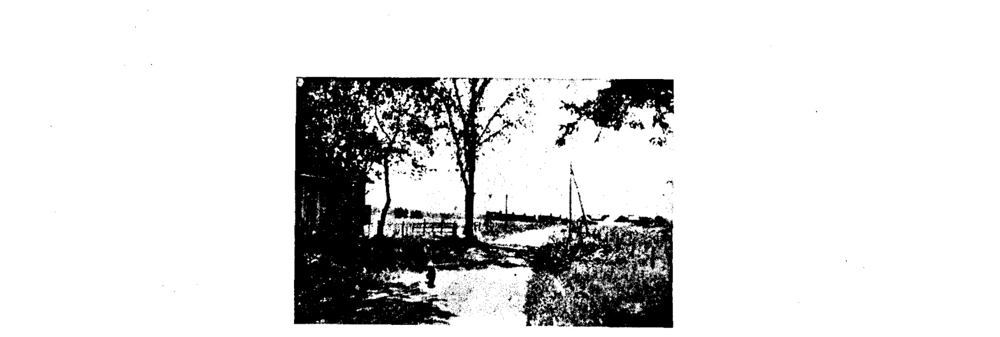
Ferme abandonnée que l'on est à rejeunir par la culture du tabac.
MODELE DE FORMULE REMPLIE DANS LE CHAMP PAR LES CLASSIFICATEURS
REGION DE : Berthier PAROISSE DE : Rang Saint-Henri
I) — Caractéristiques environnantes ou extérieures :
Topographie : ................................ Pente légère vers le fleuve Altitude 75 pieds
Microrelief : ................................ Sur le bord d'une butte
Drainage : ................................ Bon
Caractère et nature de la roche-mère : Sable fin provenant de la désagrégation du granit. On trouve de l'angite, des feldspaths, et quelquefois des paillettes de mica.
Caractère du roc sous-jacent : ................................ Calcaire Trenton
Quantité de crans et de roches à la surface : ................................ Nulle
Végétation naturelle : ................................ Mousse & fougères Le bouleau prédomine quelques ormes et résineux.
Végétation actuelle : —
genre de culture : ................................ Aucune
Coloration due à un mauvais égouttement : ..............................................................
Travail mécanique des horizons par les êtres vivants : ..............................................................
Changements saisonniers de certains horizons : ..............................................................
Remarques : — Bien que n'ayant pas de couche blanche cendrée, ce type de sol présente des traces de podsolisation ; couleur, pH de l'horizon B.
Date : 18 août 1937
Signé : Auguste SCOTT, Classificateur.
On prélève ensuite un échantillon de chaque horizon, en prenant à peu près la même quantité de terre dans chaque trou. Cette terre est mise dans des pots de verre bien étiquetés, que l'on envoie au laboratoire pour l'analyse chimique et physique. Sur l'étiquette, on indique le comté, la paroisse, le No du type et le No de série. Ce dernier No est inscrit sur la carte à l'endroit où l'échantillon a été prélevé.
MODELE D'ETIQUETTE
Laboratoire des sols Ministère de l'Agriculture
Comté : ............................................ Rang : .............................
Paroisse : ........................................ Lot : .............................
Quand les échantillons arrivent au laboratoire, on vide immédiatement les pots, et on met sécher à l'air libre, la terre étendue en couche mince sur du papier. Quand elle est bien sèche, on lui fait subir les manipulations suivantes :
1 — Préparation de l'échantillon
L'échantillon est d'abord moulu grossièrement, de façon à réduire les mottes de terre sans briser les fragments de roches, et passé au tamis de 2 mm. Ce qui reste sur le tamis constitue le gravier ou détritus, et est calculé proportionnellement à la quantité initiale d'échantillon, de telle sorte que le % de détritus est faci'ement connu.
La quantité qui a passé à travers est de nouveau moulue, cette fois plus finement et doit entièrement passer à travers le tamis de 100 mailles. Les divers dosages chimiques se font sur cette proportion finement moulue.
2 — Humidité.
On sèche dans une étuve à 100°C. jusqu'à poids constant environ 2 grammes de l'échantillon pesés dans un creuset de porcelaine. La perte de poids est reportée en % d'humidité.
3 — Perte par le feu.
Le sol, après avoir été pesé pour l'humidité, est porté dans la fournaise et incinéré au rouge sans dépasser 600°C, jusqu'à ce que toute la matière organique soit brûlée. On pèse de nouveau et on reporte la différence de poids en % de perte par le feu sur la base de la terre séchée dans l'étuve.
4 — Besoin en chaux. (Méthode de Jones)
Cette détermination est faite sur l'échantillon séché à l'air. Elle est basée sur le fait que les ions H du sol sont déplacés par les cations du sel neutre, l'acétate de calcium. Une certaine quantité d'acide acétique est formée et peut être titrée contre une solution d'alcali (NaOH) titré de force convenable. La quantité d'acide formée, ainsi déterminée, nous donne par calcul le besoin en chaux nécessaire pour neutraliser ces ions H contenus dans le sol.
Cf. : Jones, C.H., 1913, "Amer. Fertilizer", 39, No 11, p. 28. Carleton E.A. 1923, Soil Science, 16, 79-90
5 — Valeur du pH.
Détermination faite aussi sur l'échantillon séché à l'air. La méthode employée est courante. On se sert d'une machine à pH constituée d'une électrode à calomel et d'une électrode à quinhydrone, et la concentration des ions H est ainsi déterminée électrométriquement.
6 — Silice. (SiO²)
L'échantillon subit d'abord une fusion au Na²CO³ tel qu'il est indiqué dans "AOAC". Methode of Analysis", Edition 1935, Vol. 1, No. 14.
La solution ainsi obtenue par cette fusion est traitée d'après la méthode inscrite dans l'AOAC au No 16, Chap. I.
7 — Oxydes de fer, d'aluminium. (Fe²O³, Al²O³)
Le filtrat obtenu du dosage de SiO² est traité par NH⁴OH de façon à précipiter le fer et l'aluminium. Après filtration, le précipité est incinéré et pesé, son poids nous donne à l'état d'oxyde le % de fer et d'aluminium contenu dans le sol. On a déduit de ce poids les oxydes de Mn et de P qui ont eux aussi été précipités par NH⁴OH. Voir "AOAC". Chap. 1, No 17.
8 — Calcium. (à l'état de CaO)
Le calcium est précipité du filtrat obtenu dans le dosage du fer et de l'aluminium à l'état d'oxalate de Ca. Ce précipité est dissout dans H²SO⁴ (1:1) et cette solution est tirée contre une solution de KMnO⁴ N/10, ce qui nous fournit le % de Ca que nous reportons à l'état de CaO. Voir "AOAC", Chap I, No 19.
9 — Magnésium. (MgO)
Le magnésium est ensuite précipité à l'état de MgNH⁴PO⁴ par l'addition de Na²HPO⁴ en milieu ammoniacal. Le précipité est incinéré et pesé à l'état Mg²P²O⁴ et reporté comme MgO. Voir "AOAC", Chap. I, No 19.
10 — Potassium. (K²O)
Pour le dosage du Potassium, nous faisons une fusion à partir de 2 grammes de l'échantillon que nous mélangeons avec 10 grammes de CaCO³ et un gramme de NH⁴Cl. Le produit de cette fusion est lavé dans l'eau chaude. Après filtration, le filtrat est évaporé à siccité, dissous dans la quantité nécessaire de HCl (1:1) et est précipité par H²PtCl⁶ à l'état de K²PtCl⁶ par une évaporation de cette solution à l'état sirupeux. Ce précipité est lavé dans l'alcool, filtré sur un Gooch, pesé et reporté en % de K²O.
Voir "AOAC", No 31, et II No 44 (a) à partir de : "Dissolve the residue in hot H²O)".
Page sept
11 — Phosphore. ($\text{P}_2\text{O}_5$)
2 grammes de sol ; $50\text{ cc}$ $\text{HCl}$ conc. ; $10\text{ cc}$ $\text{HNO}_3$ ; conc. On filtre dans un bocal de $250\text{ cc}$. On prélève deux aliquots de $100\text{ cc}$ que l'on neutralise avec $\text{NH}^4\text{OH}$ dilué. Ensuite on acidifie avec $\text{HNO}_3$ ($1:3$) et on précipite le phosphore en ajoutant du molybdate d'ammonium.
Le phosphomolybdate d'ammonium formé est filtré et dissout dans un excès de $\text{NaOH}$, $0{,}3238$.
L'excès de $\text{NaOH}$ est titré avec $\text{HCl}$ $0{,}3238$ et d'après la quantité de $\text{HCl}$ employée dans la titration et la quantité de $\text{NaOH}$ ajoutée pour dissoudre le précipité, on connaît le $\%$ de $\text{P}$ reporté en $\text{P}_2\text{O}_5$.
Voir "AOAC", 1935.
12 — Azote. ($\text{N}^2$)
L'azote est dosé en pesant $5$ grammes de sol auquel on ajoute $5$ grammes d'un mélange de $\text{K}^2\text{SO}^4$ et $5\%$ de $\text{CuSO}^4$ et en l'attaquant avec $\text{H}^2\text{SO}^4$ concentré dans un flacon de Kjeldahl.
L'azote est ainsi transformé en $(\text{NH}^4)^2\text{ SO}^4$.
L'ammoniaque est ensuite déplacé par $\text{NaOH}$ à $50\%$ et distillée dans une quantité déterminée de $\text{HCl}$ $\text{N}/10$. $\text{HCl}$ est ensuite titrée avec $\text{NaOH}$ $\text{N}/10$ et d'après les résultats on peut facilement calculer $\text{N}^2$ et le reporter en $\%$ dans le sol.
Voir "AOAC" 1935, Chap. II, No 35.
13 — Carbone organique. ($\text{C}$)
Pour ce dosage on se sert du four à combustion. On pèse $0{,}5$ gramme de sol dans une nacelle. Cette nacelle est portée dans le four où, par la chaleur et l'action de catalyseurs appropriés, le carbone du sol est transformé en $\text{CO}^2$. Le $\text{CO}^2$ formé passe dans un tube contenant de l'ascarite où il est absorbé. La différence de poids du tube nous donne la quantité de $\text{CO}^2$ formé et de là le $\text{C}$ que l'on exprime en $\%$ dans le sol.
Voir "Dry combustion for simultaneous determination of soil organic matter and organic carbon", par J. W. Reid, Journ. of Ind. & Ing., Chem. 1921, 13, p. 305.
14 — Analyse mécanique.
On se sert de la méthode Boyoucos. Le silicate de sodium est employé comme agent disperseur. Cette analyse physique nous donne les pourcentages de sable, limon, et d'argile contenus dans le sol.
Voir "Soil Science" 1934, Vol. 38, p. 335.
15 — Détermination des Bases.
A — Bases totales.
1) Sol non calcaire.
La méthode suivie est celle décrite par R. Williams. (Journ. of Agric. Sci. 1929, p. 589-599).
On déplace les bases avec une solution $\text{N}/2$ d'acide acétique. On recueille $1000\text{ cc}$ de filtrat, $500$ ce sont évaporés à sec. On calcine au four, on ajoute $\text{HCl}$ $\text{N}/10$ et l'excès se titre par $\text{NaOH}$ $\text{N}/10$. On se sert de la phénolphtaléine comme indicateur. Les résultats s'expriment en équivalent milligramme. ($\text{E.M.}$)
2) Sol calcaire.
On décompose avec l'acide acétique $\text{N}/2$ les carbonates d'un poids connu de sol. On recueille le $\text{CO}^2$ dans une solution de $\text{Ba}(\text{OH})^2$ $\text{N}/10$. Par titration avec $\text{HCl}$ $\text{N}/10$, on détermine l'excès de $\text{Ba}(\text{OH})^2$, et par différence, le nombre de $\text{cc}$ de $\text{Ba}(\text{OH})^2$ $\text{N}/10$ neutralisés par le $\text{CO}^2$. Le processus est ensuite le même que dans les sols non calcaires.
Les résultats s'obstiennent par différence entre les $\text{E.M.}$ totaux et les résultats $\text{E.M.}$ correspondants au $\text{Ba}(\text{OH})^2$ neutralisés par le $\text{CO}^2$.
Cf. R. Williams, (Journ. Agr. Sci. 1932, Vol. 22, p. 838-844).
B — Calcium échangeable.
On précipite le $\text{Ca}$ dans les $500$ autres $\text{cc}$ du filtrat à l'état d'oxalate de calcium. Le précipité est lavé, dissous dans $\text{H}^2\text{SO}^4$ dilué et titré avec $\text{KMnO}^4$ $\text{N}/10$, les résultats s'expriment en $\text{E.M.}$ (équivalent milligramme).
Cf. : R. Williams, (Journ. Agri. Sci. 1929, p. 584-599).
II
DESCRIPTION GENERALE DE LA REGION DE JOLIETTE *
Ce qu'on appelle le district de Joliette et qui fait le sujet du présent rapport, est constituée par les parties colonisées des comtés de Joliette, Berthier, l'Assomption et Montcalm.
La superficie totale de ces comtés est de 1,230,000 âcres, dont 530,000 exploitées, le reste étant encore en forêts vierges peuplées d'une quantité considérable de gibiers de toutes sortes, visitées par les amateurs de chasse et de pêche.
Des 530,000 en culture, 150,000 sont en grains, 200,000 en foin, 140,000 en pâturages. 20,000 en cultures sarclées et 20,000 âcres sont encore en marécages ou savanes.
D'après le recensement de 1934, la population de ce district est de 78,000 habitants, presque exclusivement canadienne-française et catholique. De ce nombre, 66,000 forment la population agricole avec environ 8,000 cultivateurs.
Au pont de vue communications, ce district est très bien situé. Deux grands chemins de fer — le Canadien National et le Canadien Pacifique — le traversent dans toute sa largeur. De plus, ses pieds baignent dans les eaux du Saint-Laurent, navigable par les plus gros transatlantiques. Le système routier est très élaboré et se perfectionne d'année en année.
Plusieurs autres rivières de moindre importance sillonnent le district et, tout en lui fournissant un élément de beauté et de pittoresque remarquable, facilitent la régularisation des eaux et le drainage.
Le plus grand de ces cours d'eau est la rivière l'Assomption qui partagent le district en deux parties presque égales, mais qui ne reçoit de tributaires que du côté sud. Les principaux de ces tributaires sont la rivière Ouareau, la rivière Rouge, et la rivière l'Achigan. Nombre de petits ruisseaux lui font comme une escorte tout le long de son parcours et après l'avoir suivi dans ses méandres, finissent par augmenter son débit de l'apport de leurs eaux.
Après avoir ainsi reçu le tribut de ces vassaux, l'Assomption vient fièrement se présenter aux portes de l'île de Montréal.
Deux autres petites rivières sortant du Nord, se jettent au fleuve à Bertier : La Bayonne et la Chaloupe. Enfin, le Chicot qui passe à Mascouche vient se jeter dans la rivière Jésus à Terrebonne.
Ces rivières coulent souvent et sur d'assez grande distance entre deux bancs de rocs, la plupart du temps calcaires, à escarpement prononcé.
Si, enfin, nous allons piquer une pointe vers les Laurentides qui forment la partie élevée de ces comtés, nous y rencontrons une myriade de petits lacs poissonneux qui, en outre de fournir l'eau aux rivières plus haut citées, constituent un centre d'attraction merveilleux pour les touristes.
Ce district est donc, en résumé, des plus intéressant à cause de sa topographie qui est variée et à cause aussi de son système hydrographique très élaboré.
C'est dire que nous y rencontrerons une grande variété de sols : Argile alluvionnaire du Saint-Laurent et de la mer Champlain, Sables calcaires des plateaux de rivières, graviers calcaires des formations Beckmanton et Chasy, sables fins poudreux remaniés par les vents, enfin savanes et tourbières des bas-fonds humides, résidus d'anciens lacs et de bassins de rivières.
Climat.
Si à ces facteurs topographiques, nous joignons celui du climat, nous aurons l'explication de cette variété considérable dans les sols de ce district.
Sous le rapport du climat, le district se divise en trois zones.
La partie comprise entre l'Assomption et Montréal a sensiblement le même climat que celui de la métropole avec une moyenne de 1° F. plus élevé qu'à Joliette même. Cette ressemblance est caractéristique surtout aux saisons de transition, au printemps et à l'automne.
Une autre partie, le centre du district ou le reste de la plaine se rapproche sensiblement au point de vue climatique que de la région du lac Saint-Pierre. Cette différence, si peu marquée soit-elle avec la première région, est cependant suffisante pour empêcher la production de primeurs. C'est dire qu'elle est un peu plus froide. Enfin, la région des montagnes est nécessairement plus froide que les autres.
Voici d'ailleurs quelques chiffres puisés aux statistiques climatologiques compilés par le Ministère du Commerce.
La période moyenne de végétation est la suivante pour chaque région :
125 jours pour la première
118 jours pour la deuxième
110 jours pour la région des Montagnes
La précipitation atmosphérique est de 36" répartie assez uniformément sur toute l'année.
La température s'élève rarement à 90° F. en été. Le thermomètre descend assez souvent en bas de zéro en hiver. On a même enregistré 40° F. sous zéro pendant quelques jours. La température moyenne de l'année s'établit à 41° F. Il y a donc assez de variantes pour satisfaire les plus exigeants.
Ce district se prête donc à une exploitation agricole de même qu'à un mouvement touristique considérable, ce qui n'est pas pour diminuer ses possibilités non seulement agricoles, mais aussi industrielles.
* Nous sommes redevables à M. Anthime Charbonneau, agronome régional, pour les renseignements fournis à ce sujet.
III
GEOLOGIE
par le Dr FERNAND CORMINBOEUF
A) PHYSIOGRAPHIE.
La région de Joliette appartient à deux provinces physiographiques distinctes : le Bouclier Canadien et les Basses Terres du Saint-Laurent. La section nord-ouest du comté, à partir de Saint-Cléophas et Sainte-Mélanie, fait partie de l'immense région du Bouclier. Elle présente l'aspect d'une région montagneuse ancienne, aux collines arrondies et fortement usées, aux vallées recouvertes de drift et de rocaille. Ce modelé, caractéristique de tout paysage glaciaire, nous le devons aux mouvements des glaciers pléistocènes, et à un degré moindre, à l'érosion sub-aérienne des temps secondaires et tertiaires.
La section qui s'étend au sud-est de la précédente englobe le reste du comté. Elle appartient entièrement au district des Basses Terres du fleuve. Plane ou faiblement ondulée, cette région nous laisse voir sur toute son étendue des sédiments non consolidés, contemporains des matériaux qui recouvrent les assises paléozoïques du Saint-Laurent dans le Québec et l'Ontario. Donc des sédiments quaternaires. Tels sont les sables de Saint-Thomas, les dunes de Lavaltrie, la grande tourbière de Lanoraie, les moraines et l'argile de Sainte-Élisabeth, etc. Les rivières L'Assomption, Ouareau, Bayonne, parvenues à la phase sénile, promènent leurs méandres divagants au sein d'un ancien lit majeur de sable limoneux, de limon ou de glaise.
B) MINÉRALOGIE — PÉTROGRAPHIE.
Dans la section nord des comtés, à partir de Sainte-Marceline, Sainte-Mélanie et Saint-Cléophas, se succèdent les escarpements du Bouclier canadien sous forme de collines usées, arrondies, où affleurent un peu partout les surfaces moutonnées du roc sous-jacent. L'examen des affluements, qui sont d'âge précambrien sans exception, nous révèle une orientation générale nord-est à sud-ouest des plis, avec un pendage sous des angles de 35 à 45 degrés. La roche en est compacte, fortement métamorphisée, et compose de couches alternantes d'orthogneiss, de quartzite et de divers ferro-magnésiens (augite, hornblende, etc.) qui ont une tendance marquée à la ségrégation.
Sur le pourtour des collines ou des crêtes, on trouve un éluvium grossier, qui résulte sans nul doute du délavage des moraines. Les parties adjacentes aux élévations comprennent de petites vallées ou des cuvettes comblées de drift originel, auquel est venu s'associer cependant, en de nombreux endroits, un diluvium argileux ou limoneux. Une zone importante de cette formation sédimentaire se rencontre au sud et au sud-est de Sainte-Marceline, et une autre, d'étendue plus restreinte, à l'ouest de Saint-Cléophas. Entre ces deux zones, et sur le pourtour des élévations ou des buttes morainiques, il existe d'innombrables sablières ou gravières nettement stratifiées, mais dépourvues de tout coquillage subarctique. Bien qu'on ne puisse les rattacher aux formations de l'époque Champlain, elles appartiennent néanmoins au quaternaire récent puisqu'elles surmontent ces dépôts glaciaires.
Au sud des premiers escarpements laurentiens, les affleurements du roc consistent en des sédiments métamorphisés (grès et conglomérats plus grossiers) de la formation Potsdam. Ces matériaux ont, semble-t-il, contribué dans une large mesure à la genèse du sol, des sablières et des gravières de la région.
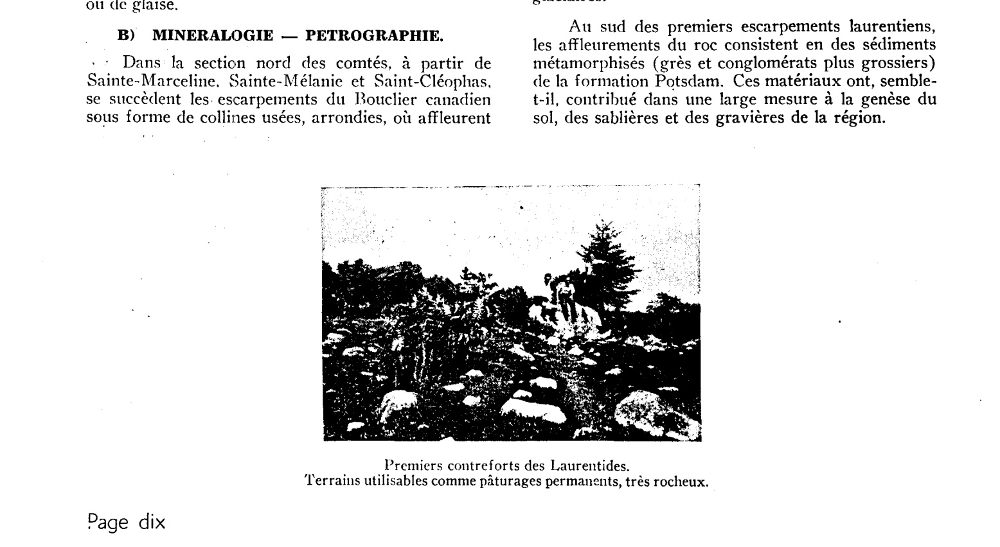
Premiers contreforts des Laurentides. Terrains utilisables comme pâturages permanents, très rocheux.
Immédiatement au nord de la cité de Joliette, et faisant suite au Potsdam, une bande étroite de la formation Beekmantown (calcifère) traverse tout le comté dans une direction sud-ouest à nord-est. Elle affleure par endroits, bien qu'elle soit en général recouverte d'une mince couche de drift ou de sédiments de l'époque de submergence Champlain. Cette formation, qui constitue le roc sous-jacent, se compose d'un calcaire magnésien ou dolomitique, de couleur gris brunâtre, avec des entrelits de sable ou de schiste. On peut l'observer très facilement dans une coupe de la rivière Ouareau, près de la limite des comtés de Montcalm et de Joliette, ainsi que dans un affleurement de crête situé au sud de la rivière Bayonne, à quelque trois milles à l'ouest de Sainte-Élisabeth.
Sur le rebord sud-est de Beekmantown, une bande très étroite de calcaire Chasy traverse également tout le comté. Elle est transgressive, et arrive en contact avec le Trenton à Joliette même. La roche en est distinctement stratifiée; les strates, presque horizontales, consistent en un calcaire gris bleuâtre, très fossilifère, riche en Brachiopodos notamment. On peut l'observer particulièrement dans le lit de la rivière L'Assomption, lorsqu'on quitte la ville de Joliette par l'est.
Une bande large et puissante de calcaire Trenton fait suite au Chasy, et constitue le roc sous-jacent de toute la partie méridionale du comté. Toutefois, les affleurements y sont plutôt rares, car le manteau de drift ou d'alluvion quaternaire, qui abrite le Trenton dans cette région, est en général assez épais. A Joliette même où cependant cette couche est plus mince qu'ailleurs, il a fallu remuer une couche de plusieurs pieds d'épaisseur d'argile à blocaux pour atteindre le calcaire cristallin qu'on y exploite dans deux carrières, au sud-est et au sud-ouest de la cité.
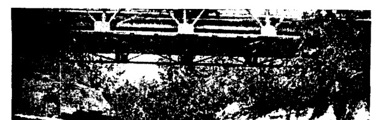
Rivière Ouareau creusant son lit dans le calcaire Trenton.
C) FORMATION GEOLOGIQUE DES SOLS.
Dans cette région, on distingue des sols :
1o — Autochtones, c'est-à-dire des sols dont la roche-mère et le roc sous-jacent sont identiques. Ils sont résiduels. C'est le type de sol habituel dans la section laurentienne du comté. Là, les sols autochtones dérivent directement des assises précambriennes gneissiques ou granitiques, grâce à l'action conjointe de l'atmosphère et des eaux d'infiltration. Il en résulte tantôt un éluvium (sol de texture grossière), tantôt un diluvium (sol de texture fine), que l'on rencontre soit sur les plateaux, soit dans la partie haute des vallées, soit encore sur le pourtour des géosynclinaux.
2o — Mixtes, c'est-à-dire des sols dont la roche-mère participe à la fois du roc sous-jacent et de matériaux de transport. Les sols de ce genre sont communs dans la région de Saint-Cléophas, Saint-Félix de Valois, Saint-Ambroise ; bref, à la base de l'escarpement du Bouclier. Ils proviennent de la désagrégation des roches cambriennes sous-jacentes : grès, quartzite, conglomérat de Potsdam, et surtout de matériaux morainiques (argile à blocaux) remaniés par les eaux de ruissellement post-glaciaires. Leur composition minérale et leur texture varient beaucoup d'un endroit à l'autre ; leur profondeur, leurs caractéristiques culturales sont également très variables. La plupart des sablières et des gravières situées au nord de la cité de Joliette ont la même origine.
3o — Allochtones, c'est-à-dire de transport. La roche-mère de ces sols diffère entièrement du roc sous-jacent. Elle est toujours représentée, dans le comté, par des sédiments pléistocènes (glaciaires Champlain) ou holocènes (dépôts actuels). Le sol y procède donc de dépôts quaternaires.
Bien que les formations Beekmantown, Chasy, et Trenton se partagent le roc sous-jacent des parties centrales et méridionales du comté, elles atteignent rarement l'horizon C. En conséquence, elles n'ont pour ainsi dire pas contribué à la genèse de son sol. La roche-mère de celui-ci est toujours un dépôt quaternaire, et le plus souvent un alluvion. Alluvion d'argile marine Champlain dans les districts de Sainte-Elisabeth, de Saint-Paul, de Sacré-Cœur ; alluvion de sable Champlain et de sable limoneux holocène dans les districts de Joliette, Saint-Thomas, Lavaltrie, Lanoraie.
Les dunes représentent un remaniement éolien des sables précédents. L'immense tourbière de Lanoraie, (Berthier-Joliette), d'une superficie de 7,500 âcres, résulte de l'accumulation et de la décomposition partielle de plantes hydrophiles : sphaigne, linaigrette (Eriophorum), hypnée, et carex (sur le pourtour). C'est une tourbière quaternaire, qui s'est développée sur un alluvium de sable fin et d'argile grise Champlain. Un fond sablo-argileux imperméable, une disposition du terrain en forme de cuvette, devaient assurer les conditions d'humidité favorables à l'accroissement de la tourbière et à l'action du tourbage (fermentation du type forménique).
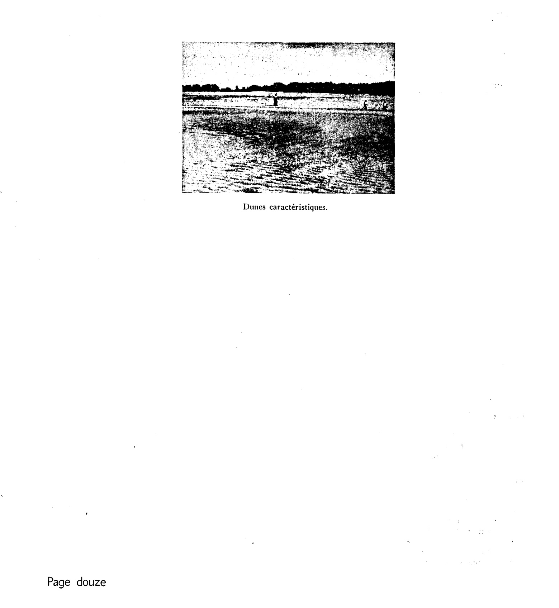
Dunes caractéristiques.
IV
PEDOLOGIE
Les sols de la région de Joliette ont été divisés en quinze types différents, qui peuvent se grouper dans les classes suivantes :
A) LES SABLES DE JOLIETTE
a) Fins, à tabac à cigarette
b) Grossiers
B) LES GRAVIERS
a) Acides
b) Calcaires
C) LES ARGILES
D) LES LIMONS OU TERRES FRANCHES
E) LES TERRES ORGANIQUES
a) Terres noires
b) Savanes.
A) LES SABLES
Les sables de Joliette ont été classifiés en six types différents. Ils sont distribués un peu partout dans la région, mais on les rencontre près de Saint-Thomas, Lanoraie, Lavaltrie et dans le nord du comté de l'Assomption.
Ces sables ont été formés par l'eau agissant sur du matériel laurentien déposés par les glaciers. Ils se rencontrent en terrasses plus ou moins vallonneuses. C'est ordinairement dans le fond de ces vallons que l'on rencontre les sables gris plus mal égouttés et par conséquent plus riches en matière organique. Lorsque les dépressions de terrains sont assez fortes, il s'accumule des dépôts de matière organique peu décomposés, que l'on appelle savanes.
Des six types de sable, il n'y a qu'un type qui n'a pas été formé seulement par l'eau : c'est le poudreux. Ce sable a été remanié par le vent après sa formation. Ce sont des dunes plutôt qu'un sol normalement constitué. Ces sables changent continuellement de place, il ne peut s'y développer aucune végétation et il n'y a pas de profil.
Parmi ces sables de Joliette, il y a le sable fin, le sable grossier et le poudreux qui s'égouttent très bien. Nous avons rencontré du sable qui s'égouttait plus difficilement, nous en avons fait un type spécial (S.m.h.). Ces lettres réfèrent aux cartes accompagnant ce rapport. Le sable moyen de Joliette et le sable moyen à sous-sol argileux sont les deux types les plus mal égouttés. Ces deux sols ne pourraient être avantageusement mis en culture sans être drainés artificiellement.
Pour chacun des types de sol nous allons donner la description prise sur place dans le champ, après avoir fait une tranchée jusqu'à la roche-mère. Le pH indiqué est celui qui a été déterminé dans le champ à l'aide d'un Teskit Lamotte.
Sable fin de Joliette (S.f.)
Ce sol est ordinairement planche, quoiqu'on rencontre de légers vallons à certains endroits. Il y pousse surtout du bouleau et parfois des conifères et du tremble. Naturellement, c'est un sol pauvre en matière organique et en éléments de fertilité, c'est le vrai type à tabac jaune. Il est très profond et possède une capillarité surprenante.
Cette description provient des profils étudiés à Saint-Thomas de Joliette, à
Lanoraie, rang Saint-Henri près de l'école et à Berthier, rang Saint-Henri.
Végétation naturelle sur sable fin de Joliette.
Résultats analytiques
No. Labor.
. . . . . . . 13929
. . . . 13930
. . . . 13931
Horizon
. . . . . . . . . A
. . . . . . B
. . . . . . C
Gravier
. . . . . . . . 0.25%
. . . . 0.05%
. . . . 0.12%
Sable
. . . . . . . 90.00%
. . . . 92.10%
. . . . 94.80%
Limon
. . . . . . . . 7.80%
. . . . 5.90%
. . . . 4.60%
Argile
. . . . . . . . 2.20%
. . . . 2.00%
. . . . 0.60%
Analyse chimique :
Humidité
. . . . . . . 1.47%
. . . . 1.40%
. . . . 0.60%
Perte au feu
. . . . . . 3.79%
. . . . 2.08%
. . . . 1.04%
Besoin en chaux (lbs)
3285
2205
1845
pH
. . . . . . . . 5.5
. . . . 5.6
. . . . 5.5
SiO²
. . . . . . . 68.80%
. . . 69.10%
. . . 71.30%
Sesquioxides
. . . . . . 23.2 %
. . . 24.2 %
. . . 22.04%
MgO
. . . . . . . 0.78%
. . . . 0.87%
. . . 1.02%
K²O
. . . . . . . 1.66%
. . . . 1.80%
. . . 1.96%
P²O⁵
. . . . . . . 0.193%
. . . 0.212%
. . . 0.167%
CaO
. . . . . . . 1.18%
. . . . 1.48%
. . . 1.83%
Ca échangeable E.M.
. . 1.18
. . . 0.49
. . . 0.88
Bases échang. E.M.
. . 1.24
. . . 0.50
. . . 0.92
Carbone
. . . . . . . 1.92%
. . . 0.92%
. . . 0.56%
Azote
. . . . . . . 0.10%
. . . 0.06%
. . . 0.04%
Quant aux éléments essentiels totaux, K²O, P²O⁵ et CaO, on peut dire que ce sol en est bien pourvu. Il faut cependant noter qu'une bonne partie de ces éléments pourra devenir difficilement soluble, puisqu'ils se trouvent sous forme d'augite et de feldspath.
En effet, si l'on met en regard le % de calcium avec le calcium échangeable dans les différents horizons, on trouve un écart très grand surtout pour l'horizon B.
Ca total
Ca échangeable
Horizon A
1.18%
1.18 E.M.
B
1.48%
0.49 E.M.
C
1.83%
0.88 E.M.
Ceci démontre clairement que le calcium de ce sol, plus spécialement celui des horizons B et C est sous forme quasi inerte.
Ce que l'on dit du calcium, on peut également le dire des autres bases comme la potasse, puisque peu de base échangeable de ce sol est du calcium.
Nous avons là l'explication du peu de productivité de ces sols avec un si fort pourcentage d'éléments essentiels aux plantes.
Les % d'azote et de carbone nous indiquent un sol plutôt pauvre en ces éléments, et par conséquent en matière organique.
Cette analyse nous indique d'abord que ce sol est assez acide et profiterait bien d'une application de chaux pour pousser les plantes les plus utiles à l'agriculture. On constate également qu'il est plutôt riche en sesquioxydes avec tendance à une légère accumulation dans l'horizon B. Par conséquent cet horizon devrait avoir un pouvoir d'absorption plus élevé que les autres.
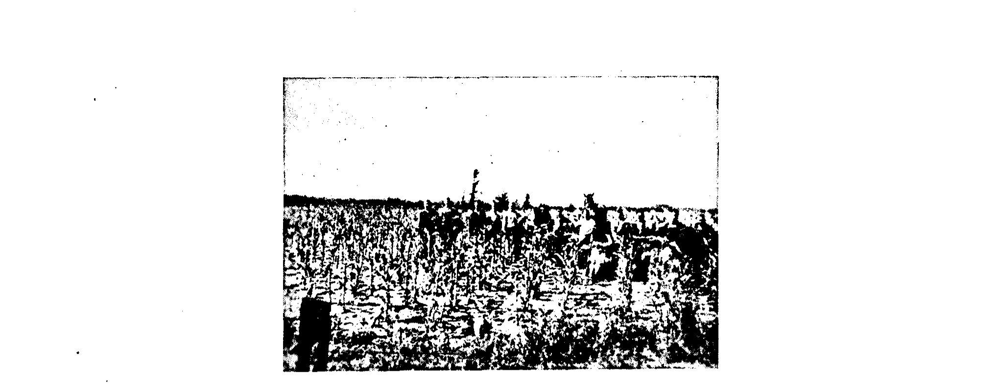
Récolte de tabac à cigarette, sur sable fin.
Ce sol ne convient aucunement pour l'agriculture générale, parce qu'il est très pauvre. Cependant, ces sables sont très propices pour la culture du tabac à cigarette, pourvu qu'on leur fournisse les engrais voulus.
D'après les renseignements recueillis, par la Coopérative des Tabacs Laurentiens, * il semble que l'engrais 2-12-10 employé à raison de 700 lbs à 900 lbs à l'arpent, est le plus recommandable.
Cet engrais sera composé comme suit :
2% d'azote dont ¼ sous forme nitrique, ¼ sous forme organique et ½ sous forme ammoniacale. Avec cette quantité, un bon développement et une bonne couleur sur pied ont été obtenus.
12% d'acide phosphorique sous forme de superphosphate
10% de potasse sous forme de sulfate, mais avec une tolérance de 2% de chlorure.
On ajoute aussi 2% d'engrais magnésien avec 1% de magnésie soluble pour augmenter la résistance aux maladies.
Avec ces quantités d'acide phosphorique et de potasse, on obtient une maturité hâtive et la qualité désirée.
* Ces renseignements nous ont été gracieusement fournis par M. Anthime Charbonneau, agronome régional de Joliette.
Il est à noter d'autre part qu'aucune autre récolte ne se fait sur les sables cultivés en tabac jaune et qu'il ne peut être question de l'emploi de fumier comme engrais. Cependant, il ne faut pas perdre de vue qu'il est nécessaire d'avoir dans le sol une certaine quantité de matière organique que les récoltes successives enlèvent et qu'il faut reconstituer.
Le moyen le plus en vogue à date consiste à enfouir deux récoltes de seigle l'automne. Le premier semis se fait après la récolte en septembre. L'année suivante quand le seigle est très mûr, toute la végétation est enfouie à la herse à disque : elle donne naissance à une autre pousse qu'on enfouit à la charrue avant la plantation au printemps suivant.
La rotation de deux ans, — un de tabac et un de seigle — est à conseiller comme reconstituante du sol.
Les constatations faites ici concordent très bien avec la technique des autres centres de production de tabac du même type.
Sable fin de Joliette mal égoutté. (S.m.h.)
Ce sol ressemble beaucoup au précédent, mais est plus mal égoutté, et parfois légèrement plus grossier. La végétation est à peu près la même. Ce sol conviendrait à la culture du tabac à cigarette, mais demanderait d'abord à être égoutté, puis apprauvri en matière organique.
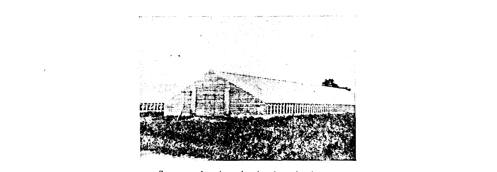
Serre pour la préparation des plants de tabac.
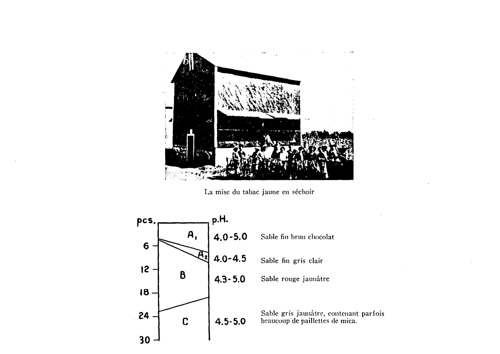
La mise du tabac jaune en séchoir
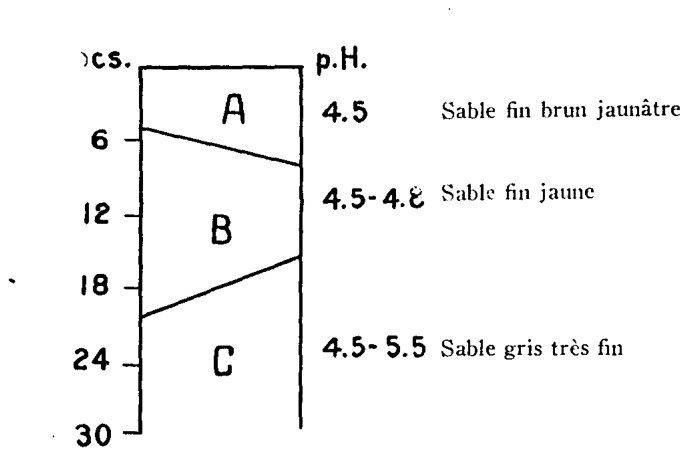
pcs.
p.H.
6
A1 4.0-5.0
Sable fin brun chocolat
12
A2 4.0-4.5
Sable fin gris clair
18
B 4.3-5.0
Sable rouge jaunâtre
24
C 4.5-5.0
Sable gris jaunâtre, contenant parfois beaucoup de paillettes de mica.
30
Les échantillons de ce type de sol proviennent de Sainte-Émilie, Saint-Gérard Magella station, Saint-Roch, Saint-Henri de Mascouche et de Lanoraie, limites de la paroisse.
Horizon
A
B
C
A
B
B2
C
No. Labor.
13947
13948
13949
13919
13920
13921
13922
Analyse mécanique :
Gravier
0.16%
0.33%
0.15%
0.0 %
0.0 %
0.0 %
0.0 %
Sable
88.5 %
93.2 %
98.0 %
90.2 %
90.2 %
97.6 %
98.6 %
Limon
8.1 %
4.9 %
1.5 %
7.0 %
6.8 %
1.6 %
0.4 %
Argile
3.4 %
1.9 %
0.5 %
2.8 %
3.0 %
0.8 %
1.0 %
Analyse chimique :
Perte au feu
3.29%
2.57%
0.58%
3.14%
4.22%
0.10%
0.05%
Humidité
1.0 %
1.15%
0.23%
0.96%
2.38%
0.29%
0.20%
Besoin en chaux (lbs)
1533.
2460.
780.
4680.
5440.
2520.
2160
pH
6.0
5.9
5.9
4.9
5.1
5.2
5.2
SiO2
70.6 %
69.1 %
71.5 %
74.2 %
68.9 %
72.4 %
76.9 %
Sesquioxydes
19.5 %
21.8 %
21.5 %
18.0 %
23.1 %
21.7 %
17.4 %
MgO
0.79%
0.83%
0.92%
0.85%
1.03%
1.27%
0.78%
K2O
2.3 %
2.04%
2.02%
2.14%
2.05%
2.08%
2.44%
P2O5
0.201%
0.177%
0.135%
0.131%
0.174%
0.100%
0.140%
CaO
1.93%
1.86%
1.79%
1.37%
1.82%
2.27%
1.85%
Ca échangeable, E.M.
1.43
0.76
0.86
0.33
0.06
0.29
0.46
Bases échang. E.M.
1.48
0.78
0.96
0.34
0.08
0.32
0.50
Carbone
1.57%
1.09%
0.26%
1.97%
2.16%
0.46%
0.18%
Azote
0.11%
0.06%
0.01%
0.12%
0.11%
0.03%
0.03%
Le pin convient très bien à cette effet, mais il a l'inconvénient de soustraire cette terre du domaine agricole et de demander ensuite de grands travaux pour la remettre en culture.
La culture des plantes silicoles herbacées comme : Elymus Arenius, Carex Arenaria, Salix Arenaria permettraient de fixer tout aussi bien ces sables et feraient en sorte que l'on pourrait les cultiver plus tard assez facilement quand ils seraient bien fixés.
Résultats analytiques
No. Labor.
13975
Horizon
nul
Analyse mécanique :
Gravier
0.0%
Sable
94.7%
Limon
4.5%
Argile
0.8%
Analyse chimique :
Perte au feu
1.09%
Humidité
0.36%
Besoin en chaux (lbs)
1080
pH
5.7
SiO2
72.2%
Sesquioxydes
22.3%
MgO
0.73%
K2O
2.06%
P2O5
0.115%
CaO
1.79%
Ca échangeable E.M.
0.59
Bases échang. E.M.
0.90
Carbone
0.18%
Azote
0.012%
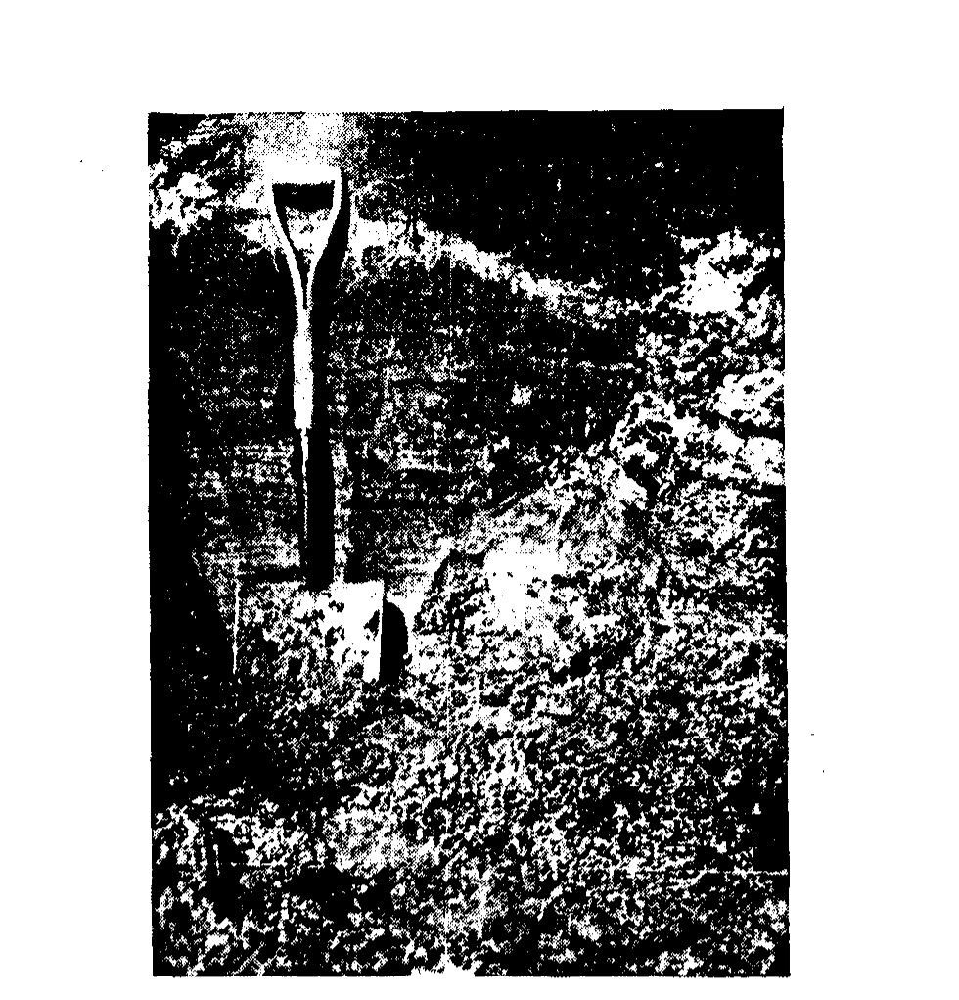
Profil de sable fin humide.
Ces analyses nous montrent que la différence n'est pas grande entre ce sable (S.m.h.) et le précédent (S.f.). Les éléments totaux sont à peu près dans les mêmes proportions. La plus forte variation existe pour les bases échangeables. Un échantillon, entre autre, montre une pauvreté en bases échangeables totales : 13919-20-21-22.
Horizon A : 0.34 E.M.
B1 : 0.08 E.M.
B2 : 0.32 E.M.
C : 0.50 E.M.
Cet échantillon semblerait plus pauvre que la moyenne générale. Ce type montre un pourcentage de carbone et d'acide légèrement supérieur au précédent. Ceci s'explique par le moins bon égoût de ce sable qui a favorisé une augmentation de la matière organique.
Les possibilités culturales de ce sol sont à peu près les mêmes que celles du type précédent. Il faut cependant noter qu'il contient un peu trop de matière organique pour donner une récolte de tabac jaune de première qualité. Pour arriver à de bons résultats, il faudrait d'abord détruire le surplus de matière organique par une jachère, ou encore mieux, par une culture sarclée quelconque. Après ces façons culturales, les recommandations données plus haut s'appliquent très bien ici.
Dunes ou poudreux (D)
L'échantillon de poudreux étudié ici provient de la route allant à la gare de Lavaltrie. Ce sable originaire tait d'anciens rivages de lacs quaternaires qui auraient formé les grands côteaux de sable de cette région. Ces sables n'ont pas toujours été ainsi. Le déboisement, les façons culturales, l'enlèvement des clotures ont permis aux vents d'avoir plus de prise sur ce sable fin et par conséquent de le rendre poudreux.
Il faudrait aujourd'hui parer à ces inconvénients en cultivant des plantes qui pourront le fixer sur place.
L'analyse nous montre que si ce sol était immobilisé par l'apport d'un peu de matière colloïdale organique, il pourrait convenir, comme le sable fin de Joliette, à la culture du tabac à cigarette. La quantité d'éléments totaux est assez élevée et se trouve, d'après les minéraux constituant ce sol, sous forme de mica, feldspaths et ferro-magnésiens.
Il va sans dire qu'il contient peu de carbone et d'azote, car la matière organique y est à peu près absente.
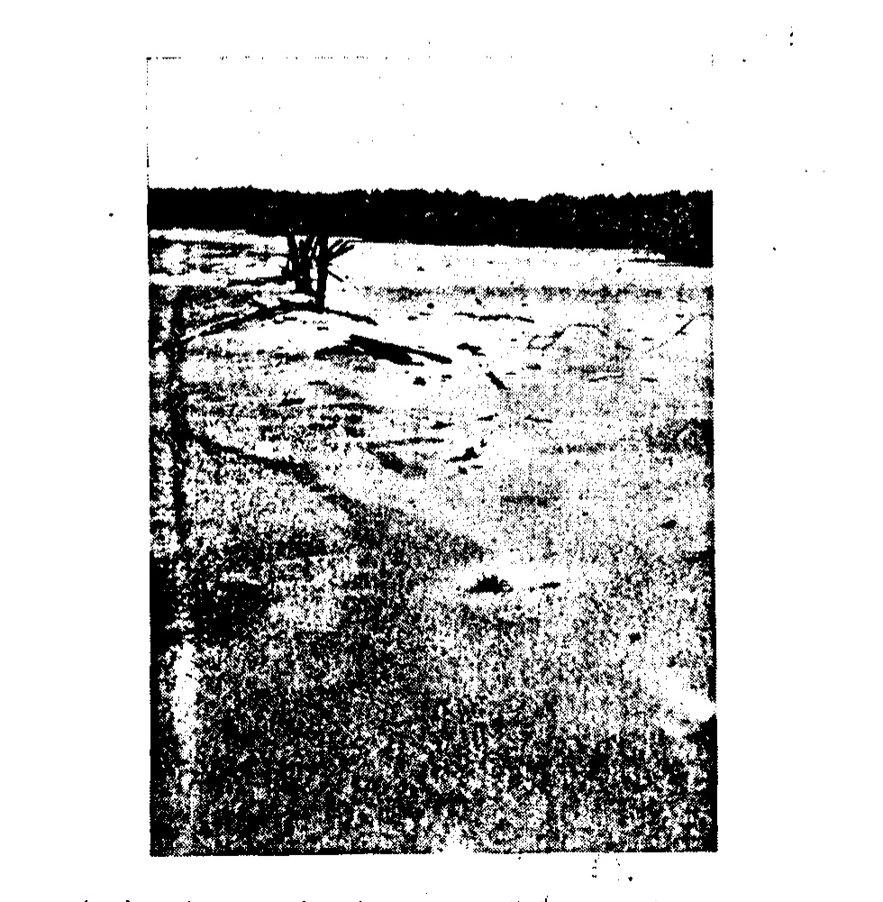
Action destructrice du vent en l'absence d'obstacles.
Sable grossier de Joliette. (S)
La topographie de ce sol est plane ou légèrement vallonneuse. Il s'égoutte très bien, car il repose sur du gravier que l'on trouve souvent dans l'horizon C. En certains endroits, on trouve des traces de podsolisation. Ce sol est pauvre en matière organique, mais semble un peu plus productif que le sable fin. Les conifères s'y développent bien, ainsi que le boulcau, le tremble, et même quelques bois francs, comme l'orme et l'érable.
Profil du Sable grossier de Joliette
A1 : 4.0 - 5.0 (Sable grossier brun jaunâtre)
A2 : 4.0 (Sable gris cendré)
B1 : 4.0 - 5.0 (Sable grossier rouge brunâtre)
B2 : 5.0 (Sable grossier jaunâtre)
C : 5.5 - 6.0 (Sable grossier graveleux)
L'étude de ce profil a été faite à Joliette, à 1½ mille au sud-ouest de Lanoraie près du fleuve, à Lavaltrie et à Saint-Gérard Magella.
Résultats analytiques
No. Labor.
13944
19345
13946
Horizon
A
B
C
Analyse mécanique :
Gravier
0.56 %
0.32 %
1.56 %
Sable
90.7 %
91.0 %
95.0 %
Limon
6.0 %
6.0 %
3.2 %
Argile
3.3 %
3.0 %
1.8 %
Analyse chimique :
Perte au feu
2.32 %
0.86 %
0.94 %
Humidité
0.9 %
0.42 %
0.38 %
Besoin en chaux (lbs)
2340
1320
1380
pH
5.9
5.9
6.2
SiO2
72.2 %
74.4 %
73.8 %
Sesquioxydes
20.57 %
18.80 %
18.44 %
MgO
0.64 %
1.46 %
1.42 %
K2O
2.44 %
2.28 %
2.28 %
P2O5
0.11 %
0.10 %
0.07 %
CaO
1.83 %
2.25 %
2.09 %
Ca échangeable, E.M.
2.30
1.32
1.22
Bases échang. E.M.
2.48
1.44
1.36
Carbone
1.16 %
0.32 %
0.26 %
Azote
0.09 %
0.02 %
0.11 %
Ce sol est un peu moins acide que le précédent, mais profiterait bien d'une légère application de chaux. Il semble par ailleurs contenir les éléments essentiels aux plantes en assez forte proportion. La quantité de sesquioxydes est cependant un peu moins élevée que dans sols précédents. Les bases échangeables sont en plus grande quantité, laissant voir que les plantes pourront s'approvisionner plus facilement en éléments essentiels. Comme les précédents, c'est un sol pauvre en azote et carbone et par conséquent en matière organique.
Ce sol ne convient pas à la culture du tabac, parce que le sable est trop grossier. Étant plus productif que les précédents, il pourrait peut-être s'adapter à une agriculture générale bien conduite. Il y aurait probablement lieu de développer certaines cultures comme le houblon ou la pomme de terre. Cependant, avant de trop pousser ces cultures, il serait préférable de faire des essais, non seulement sur les cultures, mais également sur les engrais appropriés.
Sable moyen de Joliette mal égoutté. (S.g.)
Ce type de sol a été divisé en trois phases : 1o — Sable moyen de Joliette mal égoutté (S.g.), 2o — Sable moyen de Joliette mal égoutté avec gravier (S.g.g.) ; 3o — Sable moyen de Joliette excessivement humide (S.h.).
C'est le sable moyen de Joliette mal égoutté (S.g.) qui prédomine. Ce sol contient un sable plus fin que le précédent, mais se trouve dans des conditions de drainage ordinairement lamentables. Il est généralement considéré comme très pauvre. On le rencontre près des forêts et on l'utilise surtout comme pâturage. Les rendements qu'on peut obtenir en grain et en foin sont plutôt faibles. En forêt, ce sol pousse surtout du sapin et de l'épinette. Les forêts sont encore plus humides que les terrains défrichés. On a souvent beaucoup de difficultés à y circuler.
Profil du Sable moyen de Joliette mal égoutté
A : 4.0 - 6.0 (Sable moyen contenant souvent un peu de limon)
B : 4.0 - 6.5 (Sable moyen gris jaunâtre, quelquefois moucheté de rouge)
C : 4.5 - 6.5 (Sable grossier gris acier avec concrétions rouges. On y rencontre souvent des paillettes de mica)
Cette description provient de profils étudiés à : Ile Saint-Ignace de Loyola, Joliette, près de Standard Lime Co., et Ruisseau des Anges.
Résultats analytiques
No. Labor.
13913
13914
13915
Horizon
A
B
C
Analyse mécanique :
Gravier
0.03 %
0.0 %
0.16 %
Sable
74.0 %
81.0 %
84.2 %
Limon
19.5 %
16.7 %
13.2 %
Argile
6.5 %
2.3 %
2.6 %
Analyse chimique :
Perte au feu
5.20 %
1.74 %
0.52 %
Humidité
1.4 %
0.9 %
0.26 %
Besoin en chaux (lbs)
4200
2520
1920
pH
5.3
5.6
5.9
SiO2
67.9 %
70.05 %
71.75 %
Sesquioxydes
19.05 %
20.90 %
20.06 %
MgO
1.48 %
1.67 %
1.56 %
K2O
2.15 %
2.3 %
2.5 %
P2O5
0.18 %
0.21 %
0.22 %
CaO
2.49 %
2.87 %
2.58 %
Ca échangeable, E.M.
3.10
1.24
0.89
Bases échang. É.M.
3.64
2.02
1.66
Carbone
2.75 %
0.66 %
0.21 %
Azote
0.17 %
0.04 %
0.006 %
La phase S.g.g. contient un certain pourcentage de gravier. Le profil n'accuse guère de différence avec le précédent.
La phase S.h. est caractérisée par le fait qu'elle est excessivement humide. On perçoit très bien l'odeur de gaz sulfhydrique quand on y creuse des trous.
pcs.
p.H.
A
4.0-5.5
Sable moyen cendré
6
12
B
4.0-5.5
Sable moyen et grossier gris jaunâtre très rouillé.
18
24
C
4.5-6.4
Sable grossier gris acier taché de brun rougeâtre.
30
L'étude de ce profil a été faite à Sainte-Marie Salomé et à quatre milles environ de Berthier en allant à Saint-Thomas.
Résultats analytiques
No. Labor.
14020
14021
14022
Horizon
A
B
C
Analyse mécanique :
Gravier
0.0 %
0.0 %
0.0 %
Gravier
Sable
88.4 %
91.0 %
94.4 %
Limon
9.2 %
7.4 %
4.7 %
Argile
2.4 %
1.6 %
0.9 %
Analyse chimique :
Perte au feu
1.92 %
4.15 %
0.54 %
Humidité
0.45 %
1.79 %
0.24 %
Besoin en chaux (lbs)
3240
6120
1440
pH
4.0
4.6
4.0
SiO2
76.85 %
69.65 %
72.52 %
Sesquioxydes
14.99 %
19.34 %
20.01 %
MgO
1.14 %
1.61 %
1.65 %
K2O
2.23 %
1.82 %
1.54 %
P2O5
0.030 %
0.143 %
0.200 %
CaO
1.98 %
2.25 %
2.75 %
Ca échangeable, E.M.
0.04
0.04
0.05
Bases échang. É.M.
0.42
0.50
0.64
Carbone
1.16 %
1.96 %
0.15 %
Azote
0.07 %
0.07 %
0.06 %
Nous avons ici des sols qui sont passablement acides et qui en plus d'un bon égouttement, demanderaient une assez forte application de chaux, surtout la phase très humide (S.h.). Quant à l'analyse chimique proprement dite, on peut constater qu'il n'y a guère de variations. Cependant, il semble y avoir un plus faible pourcentage d'acide phosphorique dans la phase S.h. et une baisse notable dans les horizons B et C de la phase S.g.
La plus forte différence entre ces deux phases existe dans les bases échangeables. La phase S.g. contient une assez bonne proportion de bases échangeables surtout de calcium dans l'horizon A. Ceci indiquerait que l'égoutt contribuerait beaucoup mieux que l'application de chaux pour contrôler l'acidité. La phase S.h. est excessivement pauvre en bases échangeables et particulièrement en calcium échangeable. Elle est aussi très pauvre en azote. Ici la chaux serait aussi importante que l'égoutt pour contrôler l'acidité.
Ce type de sol est considéré comme le type le plus pauvre de la région. Les étendues qui ont été défrichées sont souvent négligées et la végétation forestière est en train de s'implanter de nouveau. Il ne faudrait pas défricher ces terres, surtout la phase S.h., car le bois est encore la meilleure récolte qu'ils peuvent produire. Cependant ces terres déjà en culture pourraient probablement bien s'adapter aux pâturages permanents, pourvu toutefois, qu'ils soient drainés et qu'ils reçoivent les engrais appropriés. Actuellement nous n'avons pas de données concernant la fertilisation de ces sols.
Sable moyen à sous-sol argileux. (S.a.)
Ce sol se différencie du précédent en ce qu'il contient à 30" ou 48" de la surface une couche d'argile plus ou moins compacte. Par exception on rencontrera de l'argile à un pied, un pied et demi de la surface. C'est un sol plat s'égouttant relativement bien. La plupart des espèces de bois francs de la région, tel que orne, érable, frêne, se développent bien sur ce type de sol.
Ce profil a été étudié à Saint-Liguori, au ruisseau Vacher près de la route, et à Sainte-Marie Salomé.
L'analyse chimique nous révèle une plus grande quantité d'éléments nutritifs. La potasse particulièrement est élevée, surtout dans l'horizon C. La quantité de bases échangeables est plus élevée que dans les autres sables, particulièrement les bases autres que le calcium. Ceci laisserait supposer que nous avons là un sol plus riche en éléments assimilables.
La quantité d'azote et de carbone nous indique un sol assez riche en matière organique dans l'horizon A, mais plutôt pauvre dans les autres horizons.
Ce sol est considéré comme productif et convient très bien aux systèmes de culture mixte. Cependant les essais de culture de tabac à cigare sur ce type de sol ont donné de très bons résultats quant à la quantité et la qualité.
Résultats analytiques
No. Labor.
19385
19386
19387
Horizon
A
B
C
Analyse mécanique :
Gravier
0.43%
0.36%
0.0%
Sable
74.6%
83.1%
30.9%
Limon
19.9%
12.8%
14.6%
Argile
5.5%
4.1%
54.5%
Analyse chimique :
Perte au feu
0.21%
1.08%
3.06%
Humidité
1.17%
0.45%
2.70%
Besoin en chaux (lbs)
3060
1560
1380
pH
5.9
6.2
6.0
SiO²
68.54%
70.54%
60.34%
Sesquioxydes
20.49%
21.63%
29.65%
MgO
1.52%
1.62%
2.77%
K²O
2.53%
2.44%
3.00%
P²O⁵
0.187%
0.241%
0.215%
CaO
1.93%
2.53%
2.14%
Ca échangeable, E.M.
1.91
1.22
10.33
Bases échang. E.M.
2.76
2.68
14.56
Carbone
2.59%
0.48%
0.34%
Azote
0.20%
0.06%
0.034%
Comme nous pouvons le constater, nous sommes ici en présence d'un sol qui montre d'assez grandes différences avec les précédents, surtout l'horizon C. Ce sol n'est pas très acide et il est probable que l'égoutt seul serait suffisant pour lui enlever le surcroît d'acide dommageable aux plantes.
B) LES GRAVIERS
Ces graviers se rencontrent par butte isolées de plusieurs pieds de hauteur reposant sur l'argile. Aux environs de Saint-Sulpice, on a rencontré 37 petites buttes isolées contenant ce type de sol. La plupart sont des produits morainiques, bien qu'on en rencontre qui sont stratifiées, démontrant l'action de l'eau. Ces graviers ont été subdivisés en deux types, suivant la quantité de chaux qu'ils contiennent.
Sable graveleux acide (M)
Ce sol se rencontre surtout par butte isolées de petite étendue. L'égouttement est facile, mais les travaux culturaux sont rendus difficiles par les quantités de cailloux qu'ils contiennent.
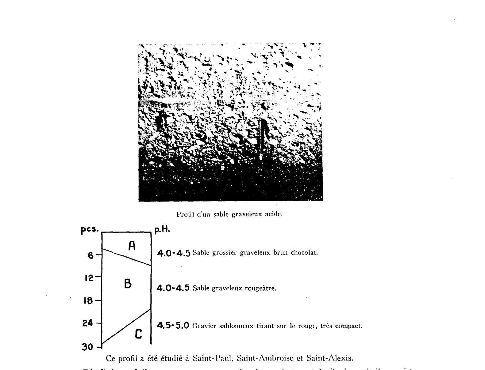
Profil d'un sable graveleux acide.
pcs.
p.H.
A4.0-4.5 Sable grossier graveleux brun chocolat.
B4.0-4.5 Sable graveleux rougeâtre.
C4.5-5.0 Gravier sablonneux tirant sur le rouge, très compact.
Ce profil a été étudié à Saint-Paul, Saint-Ambroise et Saint-Alexis.
Résultats analytiques
No. Labor.
13972
13973
13974
Horizon
A
B
C
Analyse mécanique :
Gravier
1.94%
3.87%
9.54%
Sable
82.80%
90.80%
82.30%
Limon
7.50%
7.30%
14.30%
Argile
9.70%
1.90%
3.40%
Analyse chimique :
Perte au feu
3.54%
2.73%
2.05%
Humidité
1.48%
1.90%
1.08%
Besoin en chaux (lbs)
2400
2880
1920
pH
6.3
5.9
5.9
SiO²
76.90%
73.50%
75.50%
Sesquioxydes
15.18%
18.50%
16.18%
MgO
0.72%
0.61%
0.69%
K²O
1.57%
1.82%
2.18%
P²O⁵
0.061%
0.084%
0.182%
CaO
1.25%
1.76%
1.47%
Ca échangeable, E.M.
5.92
2.17
2.40
Bases échang. E.M.
6.60
2.48
2.96
Carbone
2.39%
1.69%
1.13%
Azote
0.16%
0.09%
0.05%
L'analyse nous indique que ce sol aurait besoin d'un peu de chaux pour bien pousser. Elle nous montre également que les éléments nutritifs totaux ne sont pas très élevés. Ces éléments sont surtout sous forme de pegmatite et de ferro-magnésiens. L'acide phosphorique et le magnésium sont plutôt bas.
La chaux n'est pas très élevée, mais il en existe une bonne proportion sous forme échangeable. La quantité de carbone nous indique que ce sol est assez bien pourvu de matière organique. Cependant, celle-ci est plutôt pauvre en azote, surtout dans les horizons B et C.
La quantité de cailloux que contient ce sol le rend plutôt difficile à cultiver. C'est pourquoi beaucoup de cultivateurs y laissent pousser du bois. Comme pâturage permanent, il conviendrait très bien, mais il faudrait avoir soin d'y appliquer une bonne dose d'engrais phosphaté, si on veut favoriser la prise du trèfle blanc.
La culture fruitière y réussirait également très bien. Ces buttes auraient cependant l'inconvénient d'être un peu trop exposées au vent.
Sable graveleux calcaire (M.g.)
Ce sol est de même texture que le précédent, mais est riche en chaux. Les cailloux et les graviers font effervescence avec HCl (1:3), à quelques pouces de la surface.
Bien que situé sur des buttes, ce type de sol est le plus souvent mal égoutté. Ceci est dû à la formation d'une couche imperméable calcaire à une certaine profondeur dans le sol.
La chaux dissoute à la surface aurait été entraînée par l'eau jusqu'à une certaine profondeur où elle aurait réussi à cimenter les particules de sable et de limon entre elles. Il s'est alors formé une couche imperméable qui empêche l'eau de circuler durant les périodes de pluie, et qui arrête la montée de l'eau capillaire pendant les temps de sécheresse. Comme résultats, ces sols sont très humides dans les périodes pluvieuses et très secs en temps sec.
Ce profil a été examiné à Saint-Jacques, Saint-Sulpice, et entre Ruisseau des Anges et Rapides Mascouche.
Résultats analytiques
No. Labor.
13988
13989
13990
Horizon
A
B
C
Analyse mécanique :
Gravier
17.90%
45.30%
42.10%
Sable
72.60%
72.50%
74.50%
Limon
17.20%
16.20%
8.70%
Argile
10.20%
11.30%
16.80%
Analyse chimique :
Perte au feu
4.69%
3.90%
4.21%
Humidité
1.45%
1.20%
0.41%
Besoin en chaux (lbs)
1380
1140
480
pH
6.5
7.5
8.2
SiO²
67.80%
66.50%
63.15%
Sesquioxydes
19.30%
20.50%
18.80%
MgO
1.05%
0.90%
1.60%
K²O
2.56%
2.08%
1.98%
P²O⁵
0.122%
0.157%
0.191%
CaO
2.10%
3.90%
7.30%
Ca échangeable, E.M.
12.75
18.00
62.50
Bases échang. E.M.
16.08
27.69
87.40
Carbone
2.10%
1.12%
0.47%
Azote
0.185%
0.089%
0.014%
Ce sol est très riche en chaux de même qu'en potasse. Cependant, on remarque comme dans le type précédent, que l'acide phosphorique et le magnésium, surtout dans l'horizon B, n'existent pas en très forte quantité. Ce sol semble assez bien pourvu de matière organique et l'azote s'y trouve en plus forte proportion que dans le type précédent.
L'excès de chaux qu'il contient peut provoquer des troubles physiologiques chez certaines plantes, comme le coeur liégeux de la pomme, le coeur brun du chou de Siam et la pourriture de la tête du tabac. En somme c'est un type de sol qui n'offre pas de grandes possibilités culturales.
Ce gravier est surtout utilisé pour la construction des routes. Il possède un avantage incomparable supérieur à tous les graviers, parce que la chaux qu'il contient forme un ciment qui lie fortement le gravier et en fait des chemins très durs qui sont beaucoup moins sujets à l'érosion.
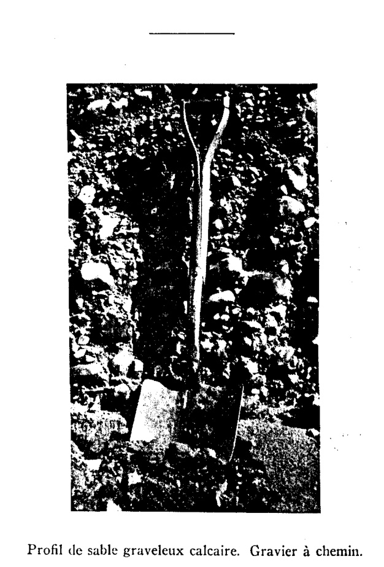
Profil de sable graveleux calcaire. Gravier à chemin.
C) LES ARGILES
On trouve les argiles sur une bonne étendue des terres de la région. Nous n'avons rencontré qu'un seul type d'argile. Nous avons cependant délimité la phase mal égouttée qui possède par ailleurs les mêmes caractéristiques que la phase mieux égouttée. C'est plutôt un sol jeune dans lequel les différents horizons ne sont pas très marqués.
C'est un sol plat constitué de fines particules homogènes. Il est essentiellement formé par l'eau, puisqu'il constitue le fond de l'ancienne mer Champlain. En général l'égouttage laisse à désirer, mais on a obvié à cet inconvénient en creusant de très profondes décharges.
5.0 - 6.8 Argile brun-chocolat à structure granuleuse.
6.5 - 7.5 Argile grisâtre mouchetée de rouille à structure en noisette.
6.7 - 8.0 Argile bleuâtre plastique.
Ce profil a été examiné à Saint-Félix de Valois, Sainte-Élisabeth, La Plaine, Saint-Esprit Sud et Saint-Alexis.
Résultats analytiques
No. Labor.
13916
13917
13918
Horizon
A
B
C
Analyse mécanique :
Gravier
0.05%
0.0%
0.0%
Sable
29.30%
16.50%
10.80%
Limon
26.80%
24.80%
20.50%
Argile
43.90%
58.70%
68.70%
Analyse chimique :
Perte au feu
6.66%
3.37%
2.80%
Humidité
3.00%
3.40%
3.06%
Besoin en chaux (lbs)
5400
3600
2760
pH
5.6
6.3
6.5
SiO₂
61.27%
59.00%
59.28%
Sesquioxydes
25.21%
31.00%
33.54%
MgO
1.52%
0.55%
1.44%
K₂O
2.90%
3.25%
3.20%
P₂O₅
0.194%
0.089%
0.097%
CaO
2.06%
2.28%
2.19%
Ca échangeable, E.M.
7.59
8.68
8.76
Bases échang. E.M.
10.58
17.12
17.64
Carbone
2.85%
0.52%
0.30%
Azote
0.22%
0.004%
0.002%
Ce sol a un besoin en chaux assez élevé avec un pH se rapprochant de la neutralité. Il est probable qu'en améliorant d'avantage l'égouttement, on réussirait à diminuer ce besoin en chaux.
On constate un assez fort pourcentage de sesquioxydes, mais ils ne sont pas encore accumulés en B ; ceci nous indique bien la jeunesse du profil. On note également un beaucoup plus fort pourcentage de magnésie et de phosphore dans l'horizon A que dans l'horizon B. Par ailleurs il est très riche en calcium et en potassium. Il ne contient pas une quantité exagérée de bases échangeables, mais il est intéressant de noter que près de la moitié des bases sont constituées de bases autres que le calcium. L'horizon A est plutôt riche en matière organique et en azote, mais on constate une chute rapide de l'azote, surtout dans les horizons B et C.
C'est sur ce type de sol que l'on trouve les meilleures terres de la région. Le foin vient très bien, de même que le grain. On y trouve également de très bons pâturages.
C'est le sol idéal pour l'industrie laitière et la production de grains et de graines de semence.
La betterave sucrière pourrait également bien se développer, mais il faudrait bien égoutter le sol et y pratiquer des labours profonds. La culture du lin pourrait aussi rapporter de beaux profits. Encore ici, il y aurait lieu d'entreprendre des essais spéciaux de cultures et d'engrais, avant de développer ces cultures sur une très grande échelle.
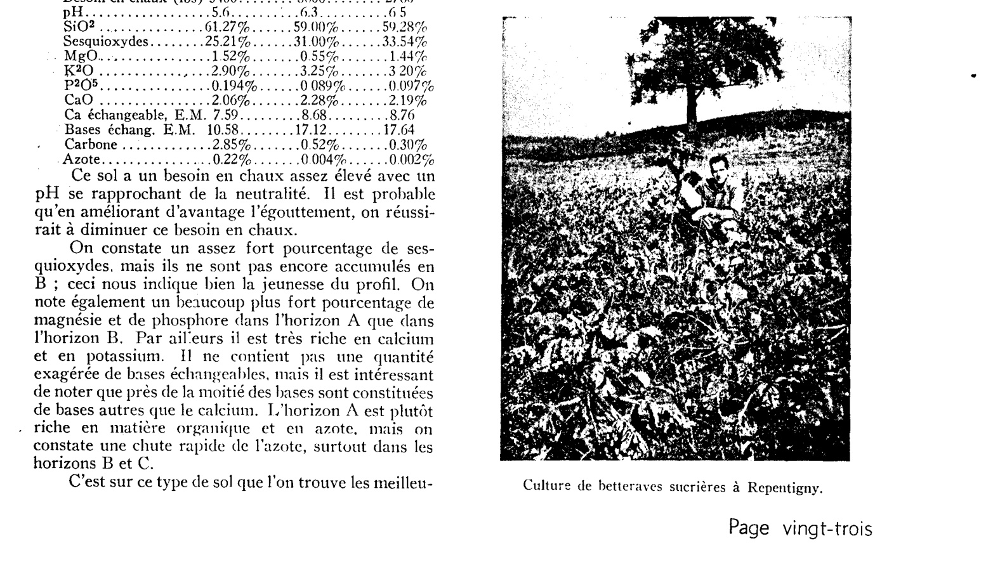
Culture de betteraves sucrières à Repentigny.
D) LES LIMONS OU TERRES FRANCHES
Cette classe de sols comprend quatre types différents : Ce sont toutes des terres d'alluvion formées sur le bord des cours d'eau actuels ou anciens. Elle comprend des terres que l'on appelle communément des terres de pointes. Ce sont des terres productives, plus faciles à travailler que les argiles, mais souvent un peu difficiles d'égoutt. On y rencontre des arbres feuillus, particulièrement des ormes.
Terre franche à sous-sol argileux. (T.f.a.)
Ce sol ne présente pas une grande différence avec l'argile (A) ; ce serait un type de transition entre les argiles et les limons. Il est un peu plus friable que les premiers : ceci est dû au fait qu'il contient un peu plus de sable et surtout de matière organique.
Ce sol est ordinairement plat, mais contient souvent de petites moraines que nous avons classées comme sable grossier (M). Il s'égoutte moyennement bien, et est plutôt riche en matière organique.
C'est un sol jeune ; les différents horizons ne sont pas très bien définis. On rencontre dans ce type, à certains endroits, un horizon A2 plus ou moins délavé. On s'est demandé si cet horizon A2 était dû à la délavation ou à la déposition d'une couche de sable sur l'argile. Les observations faites dans le champ ne nous ont pas permis de conclure, parce que les terrains vierges étaient difficiles à trouver.
pcs. 6
12
18
24
30
A
B
C
p.H.
6.0-6.2 Limon plus ou moins sableux de coloration brun-chocolat.
6.5-7.5 Limon argileux à structure granuleuse brun-grisâtre.
7.0-7.5 Argile grise brune mouchetée à structure en noisette.
Ce profil a été étudié à Saint-Ambroise, Saint-Jacques, Saint-Esprit-sud.
Ce profil a été étudié à Saint-Ambroise, Saint-Jacques, Saint-Esprit-sud.
Résultats analytiques
No. Labor.
. . . . . .13982
. . . . . .13983
. . . . . .13984
Horizon
. . . . . . A
. . . . . . B
. . . . . . C
Analyse mécanique :
Gravier
. . . . . . 0.65%
. . . 1.70%
. . . 0.20%
Sable
. . . . . . 34.80%
. . . 24.30%
. . . 21.30%
Limon
. . . . . . 46.15%
. . . 36.80%
. . . 25.90%
Argile
. . . . . . 19.05%
. . . 38.90%
. . . 52.80%
Analyse chimique :
Perte au feu
. . . . . . 5.58%
. . . 3.05%
. . . 3.35%
Humidité
. . . . . . 1.70%
. . . 2.30%
. . . 4.16%
Besoin en chaux (lbs)
2700 . . . . . .
2520 . . . .
1260
pH
. . . . . . 6.3
. . . 6.5
. . . 6.4
SiO2
. . . . . . 64.68%
. . . 64.20%
. . . 60.29%
Sesquioxydes
. . . . . . 22.32%
. . . 25.62%
. . . 29.71%
MgO
. . . . . . 1.20%
. . . 1.60%
. . . 2.29%
K2O
. . . . . . 2.69%
. . . 2.41%
. . . 2.89%
P2O5
. . . . . . 0.247%
. . . 0.099%
. . . 0.115%
CaO
. . . . . . 2.48%
. . . 2.40%
. . . 2.24%
Ca échangeable, E.M.
11.50 . . . . . .
. . 8.76 . . .
11.19
Bases échang. E.M.
13.09 . . . . . .
12.76 . . .
17.64
Carbone
. . . . . . 2.38%
. . . 0.52%
. . . 0.40%
Azote
. . . . . . 0.182%
. . . 0.033%
. . . 0.002%
Au point de vue besoin en chaux, on peut dire comme dans les argiles, qu'il est plus apparent que réel ; un bon égoût le ferait diminuer considérablement. Les sesquioxydes sont également très élevés et ne se sont pas encore accumulés dans l'horizon B.
Les éléments essentiels totaux sont en assez forte proportion. Il n'y a que l'acide phosphorique qui baisse dans les horizons B et C. Comme pour les argiles, les bases échangeables ne sont pas très élevées, mais il existe une bonne proportion de bases autres que le calcium. La quantité de matière organique et d'azote est dans les mêmes proportions et subit les mêmes variations dans les différents horizons que dans le sol précédent.
C'est un sol assez productif ; il pourrait convenir aux mêmes cultures que les argiles et il a l'avantage d'être beaucoup plus facile à travailler.
Une assez grande étendue de sol est vouée à la culture du tabac à cigare. La Station Expérimentale de L'Assomption a fait des expérience avec cette culture sur les limons que nous étudions présentement. *
Ces expériences ont été conduites sur quelques types de sol différents, pour la plupart des sols de nature franchement sablonneuse, l'on peut conclure que les résultats ainsi obtenus s'appliqueront assez bien dans la majorité des cas où se pratique la culture du tabac.
Il ressort des expériences que nous avons suivies qu'un âcre de tabac devrait recevoir les quantités suivantes des trois principaux éléments de fertilisation :
170 à 200 lbs d'azote
200 à 250 lbs de potasse
130 à 160 lbs d'acide phosphorique.
Comme l'acide phosphorique se perd très peu dans le sol par infiltration, une quantité moindre serait suffisante sur les sols depuis longtemps cultivés en tabac. Des expériences récentes démontrent également l'utilité de compléter la fertilisation par un apport de quelque vingt livres à l'âcre de magnésie (oxyde de
* Ces données ont été gracieusement fournies par M. G.-E. Turcotte, ass.-rég. à la Sta. Exp. de l'Assomption.
magnésium), celà pour améliorer la combustibilité du tabac. Pas moins de 40% de l'azote total employé devrait être de nature organique, fournie sous forme de fumier ou d'engrais organiques commerciaux. Il pourra être nécessaire d'augmenter cette proportion sur les sols sans cesse cultivés en tabac et où l'on emploie peu de fumier.
La combinaison suivante a donné jusqu'ici les meilleurs résultats : une application de 8 tonnes de fumier à l'arpent complétée par un apport de 800 à 850 livres d'un engrais chimique à formule 5-8-10 additionné de 2% de magnésie. En sol très léger, comme sur les vieux terrains à tabac, il y aura probablement avantage à employer une formule d'engrais chimique à plus forte teneur en azote et en potasse.
L'engrais chimique à tabac contiendra de l'azote nitrique dans la proportion d'au moins 20 à 25% de l'azote total. Le chlore ayant un effet désastreux sur la combustibilité du tabac, il faudra l'exclure des mélanges d'engrais chimiques en écartant son véhicule courant, le muriate de potasse.
On appliquera du fumier de préférence à l'automne. Dans tous les cas, le fumier de printemps devra être bien pourri. Si l'application des engrais chimiques se fait dans le rang, il faudrait que ce soit au moins une semaine avant la plantation.
De nombreux facteurs peuvent faire varier le genre de fertilisation adopté, notamment : la rotation suivie, la texture du sol, sa réaction, sa plus ou moins grande productivité, etc., etc. Mais, en général, les recommandations ci-haut décrites ont produit d'excellents résultats.
Les variétés de tabac à pipe ou à cigare répondront aux applications d'engrais de façon à peu près identique.
Limon argileux. (T.f.)
Ce type de sol est assez variable et ressemble souvent à un type de transition. Il est plus ou moins vallonneux avec un égouttement moyen. Ordinairement il devient plus pesant à mesure que l'on descend. C'est encore un sol jeune, dans lequel la limite entre les horizons n'est pas très apparente.
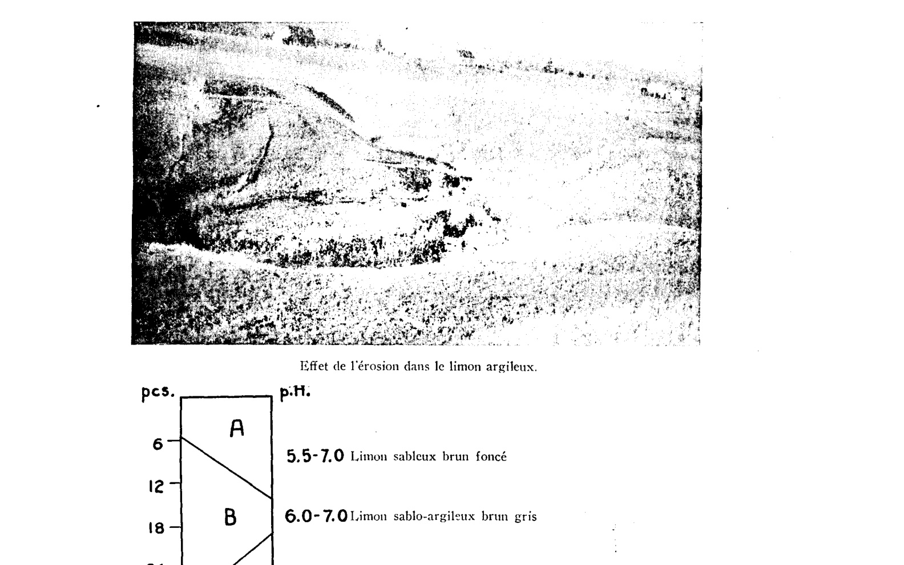
Effet de l'érosion dans le limon argileux.
pcs.
p.H.
6
A
5.5-7.0 Limon sableux brun foncé
12
18
B
6.0-7.0 Limon sablo-argileux brun gris
24
30
C
6.5-7.0 Limon argileux compact gris brunâtre. On rencontre souvent des couches alternantes d'argile et de sable très fin.
Ce profil a été étudié à Saint-Thomas, le long de la rivière Chaloupe, à Saint-Sulpice, à Saint-Jacques, au ruisseau Vacher, et à L'Assomption.
Page vingt-cinq
Résultats analytiques
No. Labor.
13976
13977
13978
14085
14086
14087
Horizon
A
B
C
A
B
C
Analyse mécanique :
Gravier
0,10 %
0,50 %
0,0 %
0,0 %
0,0 %
0,0 %
Sable
44,00 %
44,00 %
32,8 %
30,00 %
26,50 %
20,2 %
Limon
26,50 %
29,60 %
53,3 %
50,4 %
51,2 %
58,6 %
Argile
29,50 %
26,40 %
13,9 %
19,6 %
22,3 %
21,2 %
Analyse chimique :
Perte au feu
4,67 %
3,02 %
1,82 %
6,48 %
2,34 %
1,31 %
Humidité
1,55 %
1,38 %
1,30 %
2,33 %
1,27 %
1,92 %
Besoin en chaux (lbs)
2520
2520
1080
1080
360
540
pH
5,9
5,7
6,1
6,7
7,3
7,3
SiO₂
66,36 %
66,00 %
67,90 %
65,08 %
65,67 %
66,49 %
Sesquioxydes
22,60 %
23,05 %
23,30 %
23,92 %
24,31 %
24,40 %
MgO
1,02 %
1,57 %
1,05 %
1,62 %
1,47 %
1,93 %
K₂O
2,66 %
2,74 %
2,53 %
2,03 %
2,02 %
2,24 %
P₂O₅
0,137 %
0,218 %
0,202 %
0,195 %
0,187 %
0,215 %
CaO
1,76 %
2,09 %
2,12 %
2,19 %
2,58 %
2,92 %
Ca échangeable, E.M.
4,28
2,69
5,25
10,13
9,74
8,04
Bases échang. E.M.
5,00
2,80
5,36
14,56
13,30
8,18
Carbone
1,75 %
0,59 %
0,37 %
2,61 %
0,36 %
0,26 %
Azote
0,097 %
0,040 %
0,016 %
0,158 %
0,014 %
0,010 %
Les résultats analytiques de ces échantillons laissent voir les mêmes variations que nous avons notées dans l'étude du profil sur place. Comme on peut le constater le besoin en chaux est assez variable d'un échantillon à l'autre.
L'analyse chimique cependant accuse une moins forte variation. Ils sont assez riches en magnésie, potasse, chaux, et même en acide phosphorique. Dans l'échantillon de Saint-Thomas (13976) cependant, il y a très peu de bases échangeables et celles qui s'y trouvent sont presqu'exclusivement du calcium. La matière organique de même que l'azote sont plutôt en faible proportion surtout dans les horizons B et C.
Ce sol est assez productif. Il pousse bien le foins, le grain et peut bien s'adapter aux cultures mixtes à base d'industrie laitière. On y fait beaucoup de jardinage et les résultats sont très bons.
Limon sableux (L.a.s.)
Ce type de sol se rencontre ordinairement en bande étroite le long des rivières dans Montcalm et dans la partie sud-ouest de Joliette. On le rencontre surtout dans les berges de rivières.
C'est un sol plutôt plat, mais creusé de profonds ravins dus à l'érosion. L'horizon A est plutôt mince, ayant été partiellement érodé par l'eau. C'est encore un sol jeune dans lequel les différents horizons ne sont pas très bien marqués.
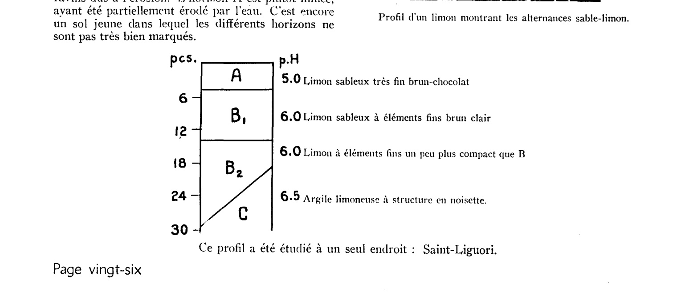
Profil d'un limon montrant les alternances sable-limon.
pcs.p.H
______ ______
| | | |
6 --- | A | --- 5.0 Limon sableux très fin brun-chocolat
|______| |______|
| |
12 --- | B₁ | --- 6.0 Limon sableux à éléments fins brun clair
|______|
| |
18 --- | B₂ | --- 6.0 Limon à éléments fins un peu plus compact que B
| /
24 --- | /
| / 6.5 Argile limoneuse à structure en noisette.
30 --- |C|
|____/
Ce profil a été étudié à un seul endroit : Saint-Liguori.
Résultats analytiques
No. Labor.
14007
14008
14009
14010
Horizon
A
B
B2
C
Analyse mécanique :
Gravier
1.0 %
2.60 %
0.50 %
0.0 %
Sable
56.20 %
46.80 %
46.30 %
27.30 %
Limon
40.00 %
50.00 %
44.40 %
36.70 %
Argile
3.80 %
3.20 %
9.30 %
36.00 %
Analyse chimique :
Perte au feu
7.47 %
4.27 %
2.13 %
2.39 %
Humidité
2.24 %
2.22 %
1.71 %
2.33 %
Besoin en chaux (lbs)
3960
2520
1440
1080
pH
5.8
5.7
5.8
6.9
SiO2
67.40 %
65.20 %
65.80 %
62.91 %
Sesquioxydes
19.19 %
23.60 %
25.88 %
24.15 %
MgO
0.268 %
0.312 %
0.742 %
1.023 %
K2O
2.62 %
2.44 %
2.76 %
3.01 %
P2O5
0.159 %
0.317 %
0.183 %
0.210 %
CaO
1.98 %
2.40 %
2.52 %
2.47 %
Ca échangeable, E.M.
3.06
2.15
3.33
7.52
Bases échang. E.M.
3.88
2.44
4.60
11.00
Carbone
3.54 %
1.86 %
0.43 %
0.45 %
Azote
0.288 %
0.133 %
0.028 %
0.026 %
L'analyse chimique nous révèle que nous avons ici un sol plutôt pauvre en magnésie, surtout dans les horizons A et B. La potasse et le calcium sont assez élevés, de même que l'acide phosphorique, surtout dans l'horizon B.
Le peu de bases échangeables se trouve encore ici sous forme de calcium. Il y aurait cependant exception pour l'horizon C.
Il est assez riche en matière organique et en azote dans les horizons supérieurs.
Ce type de sol existant plutôt sous forme de bandes étroites, il n'y a guère lieu d'adapter des cultures spéciales. Cependant, vu qu'il est sujet à l'érosion, il serait à conseiller de n'y pas trop pratiquer de cultures sarclées. Les pâturages permanents pourraient certainement contrôler cette érosion.
Limon argileux à éléments fins (L.a.)
Ce type de sol est réputé comme étant le meilleur de la région. Il se rencontre surtout sur le bord du Saint-Laurent et dans les îles de Berthier ; il s'en trouve aussi dans les méandres de la rivière L'Assomption. Ces sols sont noyés par l'eau, surtout au printemps, à l'époque de la crue des eaux. Les parties couvertes d'eau au printemps, reçoivent à chaque année une couche de limon qui contribue à maintenir et même à augmenter leur fertilité. Dans les autres périodes de l'année, l'égout est passable, bien que la nappe aquifère ne soit souvent qu'à quelques pieds de la surface.
Dans notre classification, nous l'avons subdivisé en trois phases qui ne diffèrent entre elles que par le sable qui se trouve à une plus ou moins grande profondeur. Le type limon argileux à éléments fins (L.a.) ne contient pas de sable dans le profil, tandis que le limon argileux à éléments fins sable à 18", contient du sable fin à 18" de la surface, et le limon argileux à éléments fins sable à 6", contient du sable à partir de cette distance de la surface.
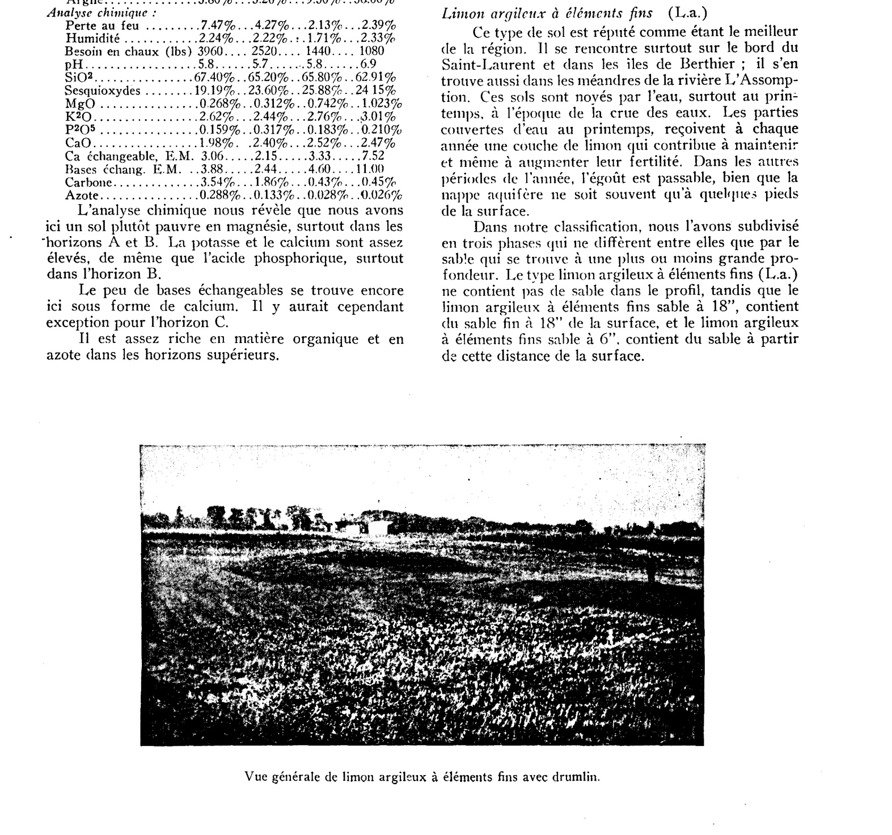
Vue générale de limon argileux à éléments fins avec drumlin.
Quant aux autres propriétés, ces sols se ressemblent beaucoup. Ils sont encore plus jeunes que les précédents, par conséquent ils contiennent des horizons peu apparents.
Voici les caractéristiques de la phase L.a.
pcs.
p.H. 5.5-7.0 Limon argileux granuleux brun chocolat.
6.0-7.5 Limon argileux gris, moucheté rouge
6.5-7.5 Limon argileux à structure grossière ou feuilletée, de coloration grise.
Ce type a été étudié à Saint-Paul et à Lanoraie.
Résultats analytiques
No. Labor.
13969
13970
13971
Horizon
A
B
C
Analyse mécanique :
Gravier
0.0 %
0.0 %
0.0 %
Sable
18.75%
19.80%
24.40%
Limon
44.05%
55.20%
43.90%
Argile
37.20%
25.00%
31.70%
Analyse chimique :
Perte au feu
7.06%
2.96%
2.48%
Humidité
3.00%
1.94%
2.02%
Besoin en chaux (lbs)
1800
1530
1530
pH
6.6
6.5
6.3
SiO₂
60.10%
64.30%
64.40%
Sesquioxydes
25.80%
26.39%
25.20%
MgO
1.00%
1.66%
1.67%
K₂O
2.22%
2.61%
2.37%
P₂O₅
0.288%
0.229%
0.225%
CaO
2.61%
2.45%
2.60%
Ca échangeable, E.M.
17.58
8.20
6.62
Bases échang. E.M.
20.24
10.96
10.20
Carbone
2.89%
0.74%
0.45%
Azote
0.270%
0.069%
0.049%
La phase L. a 6", montre le profil suivant :
pcs.
p.H. 4.0-5.5 Limon brun-chocolat
5.0-6.0 Limon sableux brun pâle
5.5-6.5 Sable très fin.
Cette description a été prise à Joliette, Sainte-Mélanie, Saint-Paul et Repentigny.
Résultats analytiques
No. Labor.
13926
12927
12928
Horizon
A
B
C
Analyse mécanique :
Gravier
0.50%
0.75%
0.0 %
Sable
65.90%
85.30%
91.30%
Limon
20.00%
11.40%
6.10%
Argile
14.10%
3.20%
2.60%
Analyse chimique :
Perte au feu
4.42%
1.00%
0.49%
Humidité
1.50%
0.44%
0.36%
Besoin en chaux (lbs)
2970
1800
1125
pH
5.48
4.6
5.8
SiO₂
66.50%
70.20%
71.80%
Sesquioxydes
21.40%
21.95%
20.79%
MgO
0.278%
0.583%
0.586%
K₂O
2.60%
2.39%
2.25%
P₂O₅
0.224%
0.216%
0.200%
CaO
2.21%
2.62%
2.48%
Ca échangeable, E.M.
3.78
0.86
0.82
Bases échang. E.M.
4.80
1.64
1.72
Carbone
1.95%
0.43%
0.20%
Azote
0.182%
0.026%
0.010%
La phase L.a. 18″ est caractérisée par le profil suivant :
pcs.p.H.
6 \ 5.0-6.0 Limon brun-chocolat
\ A \
12 \ 5.5-6.5 Limon argileux brunâtre
\ B \
18 \ 6.0-6.5 Sable grisâtre.
\ C \
24 \
Ce profil a été étudié à Berthier, à Repentigny et à l'île au Castor.
Résultats analytiques
No. Labor.
13910
13911
13912
13950
13951
13952
Horizon
A
B
C
A
B
C
Analyse mécanique :
Gravier
0.0 %
0.0 %
0.20%
0.07%
0.0 %
0.0 %
Sable
26.30%
24.80%
91.40%
55.80%
50.70%
69.90%
Limon
36.70%
38.30%
4.90%
31.00%
30.50%
24.60%
Argile
37.00%
36.90%
3.70%
13.20%
18.80%
5.50%
Analyse chimique :
Perte au feu
6.11%
3.47%
0.62%
5.01%
3.11%
1.22%
Humidité
2.78%
2.21%
0.29%
1.58%
1.35%
0.65%
Besoin en chaux (lbs)
3960
3240
1800
990
1530
1350
pH
5.5
5.6
5.0
6.9
6.9
6.8
SiO²
62.70%
64.40%
74.41%
66.07%
66.40%
69.50%
Sesquioxydes
26.19%
28.57%
18.57%
22.29%
29.30%
20.64%
MgO
1.46%
0.64%
0.63%
0.73%
0.57%
0.89%
K²O
2.00%
2.29%
1.90%
1.85%
2.26%
2.29%
P²O⁵
0.258%
0.134%
0.085%
0.272%
0.238%
0.165%
CaO
2.27%
2.22%
1.94%
2.84%
2.32%
2.68%
Ca échangeable, E.M.
8.30
6.12
2.13
19.03
9.22
4.85
Bases échang. E.M.
11.40
9.68
3.12
20.68
10.80
5.98
Carbone
2.31%
0.69%
0.226%
2.11%
0.84%
0.26%
Azote
0.234%
0.063%
0.026%
0.183%
0.074%
0.024%
La plus forte variation dans ces différentes analyses apparaît dans le besoin en chaux, le pourcentage de magnésie et les bases échangeables. La phase L.a.6" est la plus acide, la plus pauvre en magnésie, et surtout en bases échangeables. Cette phase serait la moins productive de celles qui font partie de ce type de sol.
Ce type de sol est assez riche en potasse, en calcium, en azote, et tout spécialement en acide phosphorique. C'est celui qui en contient le plus de tous les sols de la région.
On pratique toutes sortes de cultures sur ces sols; mais de grandes étendues sont en pacages permanents que l'on appelle "commune". Vu la richesse tout à fait spéciale en acide phosphorique, il serait à conseiller de porter une attention spéciale dans la préparation de ces pâturages en y faisant un bon ensesemencement du mélange spécial. Il serait très opportun, à notre avis, d'étudier le développement de ce genre de culture sur ce type de sol.
E) LES TERRES ORGANIQUES
Dans cette classe de sol, nous avons deux types : les terres noires et les savanes ou tourbières. Les deux types résultent de l'accumulation de la matière organique, comme il a été dit précédemment. La différence entre ces deux types de sol réside dans la décomposition plus ou moins avancée de leur matière organique.
a) Terres noires.
La terre noire (T.n.) provient d'anciennes savanes qui ont été égouttées et cultivées. On la rencontre ordinairement en bordure des savanes. Cette terre pousse bien quand elle est traitée d'une façon adéquate.
b) Savanes.
Les savanes (T') couvrent une très grande étendue, comme on peut le constater par les cartes. Il y en a surtout deux grandes dans cette région : la savane de Lanoraie et la savane de Lavaltrie.
La savane de Lanoraie est très profonde et repose sur un lit de sable en forme de cuvette, de 10 à 20 pieds de profondeur. Il serait assez difficile de l'égoutter pour la mettre en production et les résultats que l'on en obtiendrait sont problématiques.
La savane de Lavaltrie est un peu moins profonde, surtout vers l'ouest, et repose sur un lit d'argile à six pieds et plus de profondeur. Il y aurait lieu d'abord de travailler cette savane, car les résultats que l'on pourrait en obtenir sont plus encourageants que dans le cas précédent.
Page vingt-neuf
V
CONCLUSIONS
Le district de Joliette dont nous avons fait une synthèse agro-géologique aussi complète que possible dans ce rapport, constitue donc un coin de pays qui offre des possibilités culturales industrielles et touristiques des plus intéressantes, parce que très variées.
Nous trouverons dans rapport auquel des cartes détaillés sont annexées, les données suffisantes pour orienter les diverses cultures dans cette région de la province, qui jouit d'une situation presque privilégiée avec son gros marché de Montréal et ses centres industriels et touristiques, tels que Berthierville, Joliette, L'Assomption, Saint-Gabriel, Rawdon, etc.
Toutes les productions les plus diversifiées que l'on puisse supposer peuvent donc trouver un marché proche et avantageux.
Toutefois il semble bien que l'orientation principale s'accentue depuis quelques années vers une production tout à fait spéciale : la culture du tabac à cigarette.
Evidemment, à cause de sa valeur économique, cette culture est des plus intéressante, et il est à souhaiter que tous les terrains immédiatement ou médiatement utilisables pour cette culture soient employés. D'ailleurs, la période d'essais dans ce domaine est chose du passé.
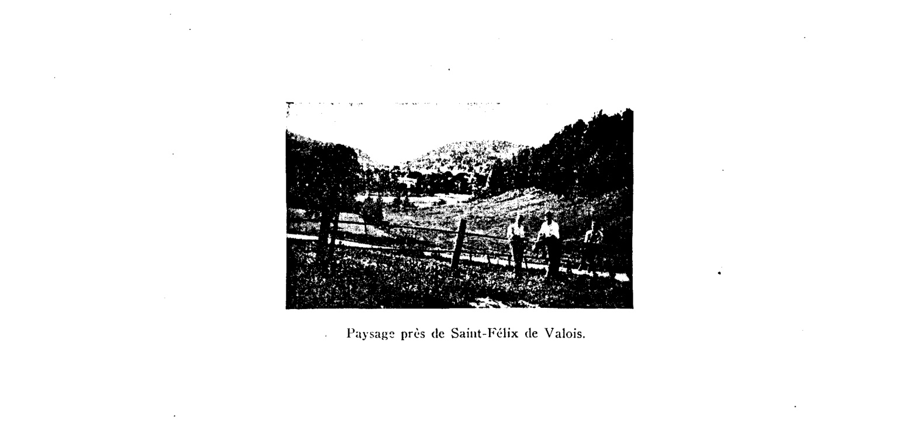
Paysage près de Saint-Félix de Valois.
Mais tous les terrains ne se prêtent pas à cette culture et il reste encore de la place pour la culture de la pomme de terre, par exemple, des céréales et des fourrages. Nul doute que les dirigeants de l'agriculture de ce district organiseront cette industrie de façon à coordonner les diverses productions en vue de l'équilibre auquel se prête la nature du sol et le site de ce district.
Nous est-il permis de suggérer que la Station Expérimentale de L'Assomption entreprenne un travail méthodique d'expérimentation sur chacun des types de sols indiqués et déterminés dans ce rapport.
Il est un point sur lequel nous croyons devoir attirer l'attention des ministères : c'est la grande proportion des sols qui souffrent d'un mauvais drainage. On pourrait s'attendre, dans un district pourvu de tant de rivières, petites et grandes, à rencontrer une distribution convenable de l'eau. Tel n'est pas le cas cependant. Beaucoup de grandes étendues de terre sont trop humides, alors que d'autres se dessèchent totalement, “poudrent” au vent.
Il y aurait donc lieu d'étudier le problème, et nul doute que sa solution contribuerait à accroître la richesse de ce district.
Donnons des exemples.
Des étendues assez considérables de sable fin, à texture tout à fait convenable pour la culture du tabac jaune, sont inutilisables présentement, parce qu'elles regorgent d'eau ou qu'elles volent en poussière au moindre souffle de vent. Deux extrêmes qu'il faudrait corriger.
[Photographie noir et blanc montrant une vue générale de la savane de Lanoraie avec des arbres clairsemés]
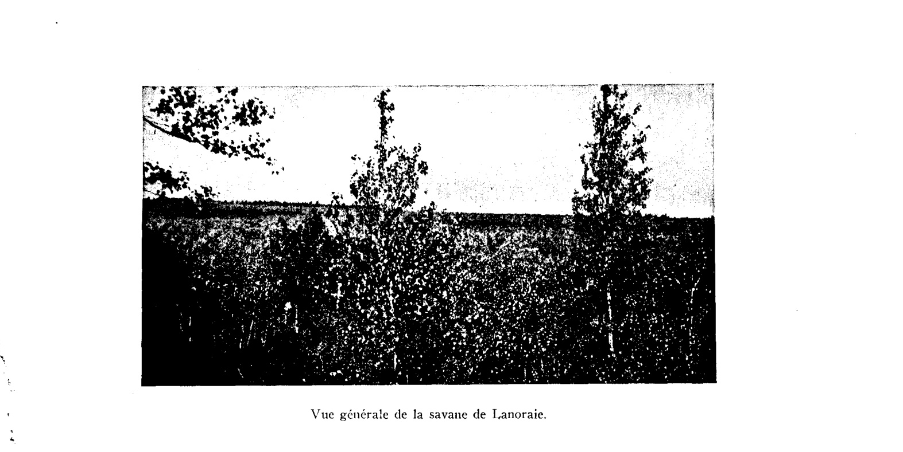
Vue générale de la savane de Lanoraie.
D'autres sables plus grossiers produiraient de grosses récoltes de légumes et de pommes de terre en particulier, l'abondance d'humidité limite leurs rendements actuels.
Enfin, des argiles alluvionnaires, des terres franches, actuellement de productivité moyenne verraient augmenter leurs rendements considérablement avec le drainage et l'égouttement nécessaire.
Enfin, 50,000 acres sont en savane, dont une bonne partie pourrait avantageusement être égouttée, sans aucun doute. Ces terrains actuellement incultes pourraient augmenter l'actif de cette région et offrir des débouchés pour le trop plein des vieilles paroisses, ou les chômeurs, anciens cultivateurs des petites villes de la région.
En référant aux cartes annexées au présent rapport, on pourra facilement localiser ces terrains qui sont insuffisamment drainés, et dont la productivité serait augmentée considérablement par cette amélioration.
Ces cartes et ce rapport, nous l'espérons, constitueront donc un dossier qui fournira les renseignements convenables aux intéressés, et servira de point de départ aux améliorations et aux redressements, s'il y a lieu.
CULTURES SPÉCIALES
S'il y avait lieu de préconiser plusieurs spécialités pour cette région, nous n'hésiterions pas à faire les recommandations suivantes :
Sable fin : Tabac à cigarette
Sable grossier : Houblon et pomme de terre
Argile : Betterave à sucre et lin
Limon : Tabac à cigare, grain, foin.
Terres noires : Céleri, oignon, menthe poivrée.
REMERCIEMENTS
Il nous fait plaisir de remercier tous ceux qui nous ont aidés dans l'exécution du travail consigné dans le présent rapport.
M. Anthime Charbonneau, agronome régional de Joliette, de même que M. Fernand Godbout, nous ont fourni une collaboration des plus précieuses.
De même, nous remercions, le chef du Service de l'Horticulture, M. J.-H. Lavoie et tous ses spécialistes en tabac, ainsi que les dirigeants de la Station Expérimentale de l'Assomption.
Enfin, nous sommes reconnaissants à tout le personnel du Laboratoire pour la collaboration franche et loyale qu'il nous a toujours donnée.